Fine tuning tutorial¶
Prerequisites
Basic familiarity with Python
Some familiarity with linear algebra
If you have used a LLM-based chat application it’d be beneficial
Some basic understanding of how a machine learning/deep learning model is trained at a general level
What is a Large Language Model?¶
A Large Language Model (LLM) is a type of artificial intelligence trained on vast amounts of text data to predict and generate human-like text. At their core, these models learn statistical patterns in language: given a sequence of words (or better tokens: fragments of words, commas, and anything in text), they predict what comes next.
{kind=link}
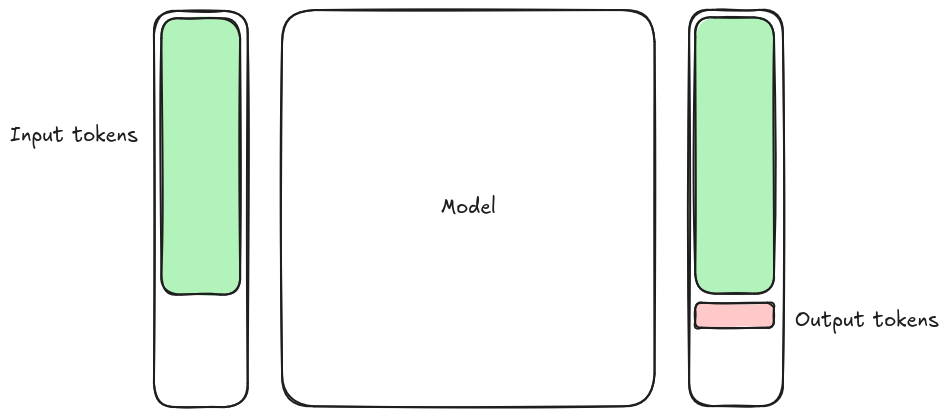
A simplistic mental model for an LLM¶
Stochastic Parrots
LM [Language Model] is a system for haphazardly stitching together sequences of linguistic forms it has observed in its vast training data, according to probabilistic information about how they combine, but without any reference to meaning: a stochastic parrot.
—Emily M. Bender and Timnit Gebru
Anatomy of a Large Language Model¶
A language model does not read text as words and sentences: text must first be converted into numerical representations, then transformer layers update those representations using the surrounding context.
A simplified forward pass looks like this:
text
-> tokens
-> token IDs
-> embeddings
-> transformer blocks
-> output logits
-> next-token probabilities
For a generative language model, the process is repeated one generated token at a time.
Questions
How does text become input to a neural network?
What information is contained in a token embedding?
How does attention introduce context?
What do queries, keys, and values represent?
What is the role of the feed-forward layers?
Why can decoder-only models not attend to future tokens?
Objectives
By the end of this episode, learners should be able to:
describe the path from text to tokens, embeddings, and output probabilities;
explain why modern language models use subword tokenisation;
distinguish an initial token embedding from a contextual representation;
describe self-attention using queries, keys, and values;
explain the purpose of causal masking;
distinguish the role of attention from the role of a feed-forward network;
recognize the main differences between encoder-only, decoder-only, and encoder-decoder models.
From text to tokens¶
The first step is tokenisation. A tokeniser divides the input into units called tokens and maps every token to an integer ID.
Tokens do not necessarily correspond to words. Depending on the tokeniser, a token may represent a complete word, part of a word, punctuation, whitespace, or another frequently occurring character sequence.
Why not use one token per word?¶
A word-level vocabulary is simple to imagine:
"The" -> 104
"model" -> 527
"predicts" -> 8912
"a" -> 37
"token" -> 2841
This approach soon becomes impractical. A vocabulary would need separate entries for plurals, conjugations, spelling variants, compound words, technical terms, names, and typographical errors. It would also handle languages with productive word formation poorly.
At the other extreme, a model could process individual characters. This keeps the vocabulary small, but makes sequences considerably longer. The model must then learn how characters form common words before it can learn higher-level relationships.
Modern language models usually use subword tokenisation as a compromise. Common words may remain as single tokens, while uncommon words are divided into reusable pieces.
For example, a tokeniser might represent:
supercomputing
as something conceptually similar to:
super + comput + ing
The actual split depends on the tokeniser and on the data from which its vocabulary was constructed.
Tokenisation is part of the model
A model must be used with the tokeniser with which it was trained.
Token IDs have no universal meaning. Token ID 527 may represent one token
for one model and an entirely different token for another.
Why tokenisation matters¶
Tokenisation affects the length of the sequence seen by the model. This in turn affects memory use, computation, and the amount of text that fits within the context window.
It can also affect performance across languages and specialist domains. A tokeniser may represent frequent English words efficiently while dividing a scientific term or a word from another language into many small fragments. The model can still process such text, but the representation uses more positions and may have been encountered less often during training.
Think like a tokenizer
Consider the following strings:
train
training
pretraining
retraining
supercomputer
supercomputing
Without using a real tokeniser, propose a possible subword vocabulary that could represent all six strings.
There is no single correct answer. Discuss the trade-off between a larger vocabulary and longer token sequences.
Solution
One possible vocabulary contains:
train
ing
pre
re
super
computer
comput
This would allow:
train -> train
training -> train + ing
pretraining -> pre + train + ing
retraining -> re + train + ing
supercomputer -> super + computer
supercomputing -> super + comput + ing
A larger vocabulary could include every complete word, producing shorter sequences. A smaller vocabulary would reuse more pieces but produce longer sequences. Real tokenisers choose a compromise based on frequencies in their training corpus, often using an algorithm called byte-pair encoding (BPE).
From token IDs to embeddings¶
A token ID is an integer label. The numerical distance between two token IDs has no semantic meaning. Token ID 100 is not inherently more similar to token ID 101 than it is to token ID 9000.
Before the transformer can process the tokens, the model maps every token ID to a vector. This operation is performed by an embedding layer.
If the vocabulary contains (V) tokens and the model uses an embedding dimension (d), the embedding layer can be represented as a matrix:
Looking up a token ID selects the corresponding row of this matrix.
token ID
|
v
embedding matrix lookup
|
v
vector of length d
The embedding matrix is learned during training. Tokens that are useful in
similar contexts often acquire related representations. The number d determines
the number of dimensions in the embedding space, and since it is often large, it
can be hard to visualize. We can however project the vectors into a 2D or 3D and
draw some conclusions.
More Word2Vec
Go to https://projector.tensorflow.org/ and explore the embeddings. Click on any random word (depicted as blob), and observe and reflect on the “neighbouring” words.
Initial and contextual representations¶
The embedding-layer output is only the initial representation of a token. It does not yet express what the token means in a particular sentence.
Consider the word mole:
Another example for the word mole
A mole damaged the garden.
The chemist measured one mole of the compound.
She has a mole on her cheek.
The tokeniser may assign the same token ID to mole in every sentence. The
embedding lookup therefore produces the same initial vector.
The surrounding context is different, however. Transformer layers use that
context to produce a different representation of mole in each example.
The same principle applies when an expression changes meaning as context is added:
lion
sea lion
sea lion cuddly toy
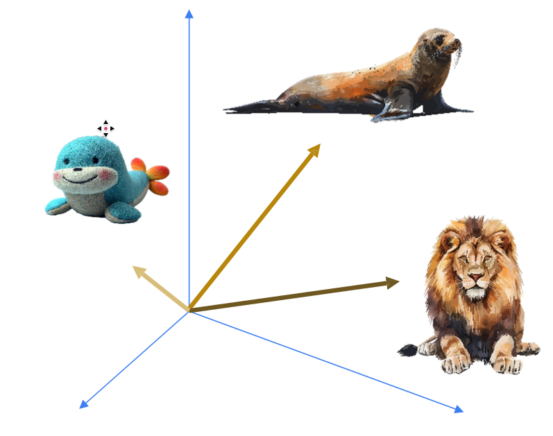
The initial vector associated with the token lion is unchanged. Its
contextual representation changes because the words around it change.
Embeddings vs contextual representations
An embedding often refers to the initial vector produced by the embedding layer, whereas a contextual representation is the vector associated with a token after one or more transformer layers have processed the sequence.
Sometimes the word embedding is used to refer to both, which can be confusing.
Important
We need a mechanism with which to encode the position, context, and the semantic meaning of each (sub-)word/token/embedding in the text. This is what the transformer architecture solves.
Type of transformers¶
Transformer architectures are commonly grouped into three broad families.
Encoder-only models¶
An encoder-only model builds contextual representations using information from both sides of a token. This is useful when the model must understand an entire input rather than generate a continuation.
Encoder-only models are commonly associated with classification, named-entity recognition, semantic similarity, and extractive question answering.
Decoder-only models¶
A decoder-only model predicts the next token based on the tokens that precede it. Most contemporary general-purpose generative language models use this architecture.
At each generation step, the model produces a probability distribution over the vocabulary. A decoding procedure selects a token, appends it to the sequence, and invokes the model again.
Encoder-decoder models¶
{kind=link}
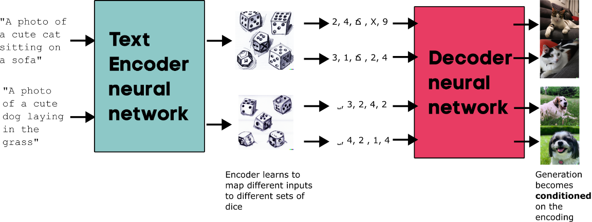
Text to image generative model as an example of an encoder-decoder model. Think DALL-E, Stable Diffusion, FLUX.1 [dev] etc..¶
An encoder-decoder model first builds representations of the input with an encoder. A decoder then generates an output while attending to both the already generated output and the encoded input.
This architecture is well suited for sequence-to-sequence tasks such as translation and summarization. They are also used for multimodal tasks such as image segmentation (for eg., Detectron) and generation (for eg., Stable Diffusion).
Focus of this lesson
The remainder of the episode concentrates on decoder-only models because they are the usual basis of instruction-tuned and chat-oriented language models. The main components also appear in other transformer families.
Inside a transformer block¶
A transformer contains a stack of repeated blocks. Although details differ between model families, each block contains two major computational components:
an attention sublayer;
a position-wise feed-forward network, often called an MLP (multi-layer perceptron).
Residual connections and normalization layers support the flow of information through the network.
{kind=link}
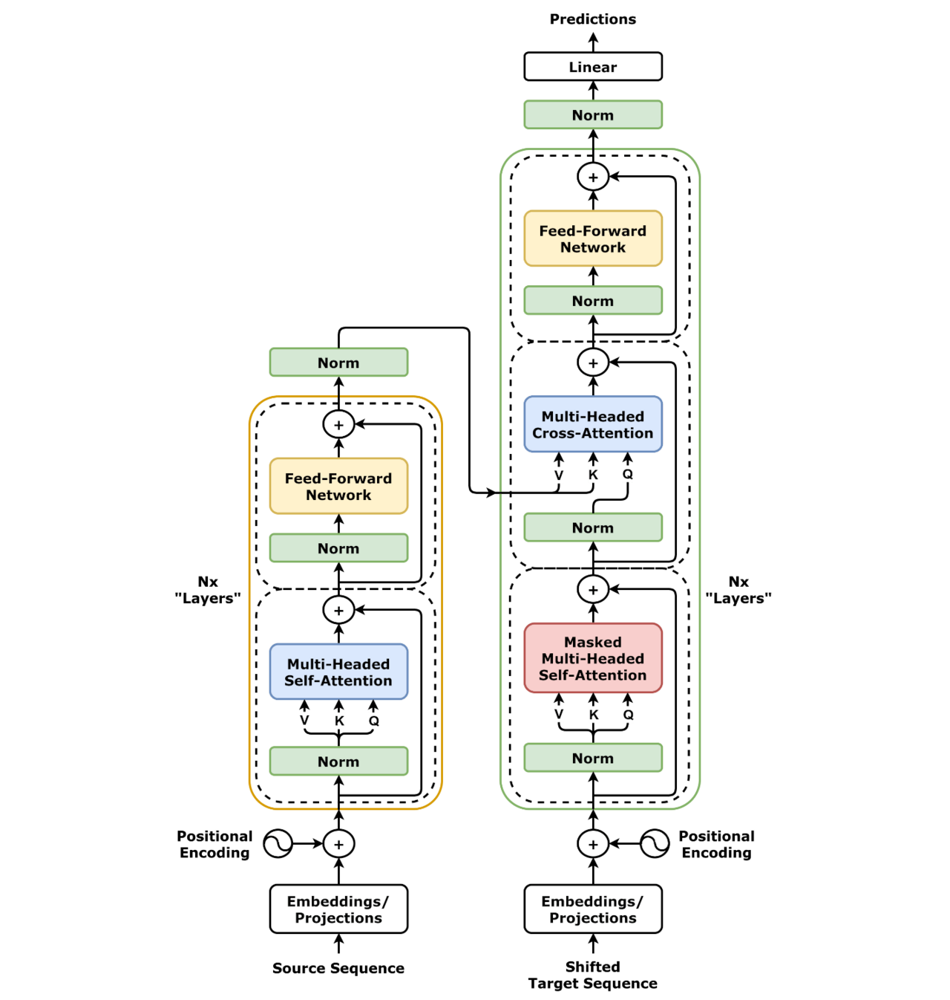
The original transformer architecture. Modern large language models often use decoder-only variants, but retain the repeated pattern of attention, feed-forward layers, residual connections, and normalization. Source¶
#/media/File:Transformer,_full_architecture.png){kind=link}
A concise conceptual distinction is:
Attention moves information between token positions.
The feed-forward network transforms the representation at each position.
Both components contain learned parameters, and both are changed during training.
Position in the sequence¶
Attention alone does not inherently know whether one token comes before or after another. The model must therefore include information about position.
The original transformer added positional encodings to token embeddings. Modern architectures may use other methods, such as learned position embeddings or rotary position embeddings.
The implementation differs, but the purpose is the same: token representations must contain enough positional information for the model to distinguish sequences such as:
the dog chased the cat
and:
the cat chased the dog
Self-attention¶
Self-attention allows the representation at one token position to incorporate information from other token positions in the same sequence.
For every token, an attention head computes three vectors:
the query describes what information the current position is looking for;
the key describes information that a position can be matched on;
the value carries information that can be passed to another position.
The vectors are produced by learned linear projections of the current token representations:
Here, \(X\) contains the input representations for all positions. The matrices \(W_Q\), \(W_K\), and \(W_V\) are learned model parameters.
Comparing queries and keys¶
The model computes a dot product between each query and each key. A larger dot product means that the query and key are more strongly aligned in the learned representation space.
The scaled dot-product attention operation is:
The expression can be read in three stages.
First, the model computes:
This produces a matrix of attention scores. Every row corresponds to a query position, and every column corresponds to a key position.
The scores are divided by the square root of the key dimension. Without this scaling, dot products tend to grow as the vector dimension increases, which can make the softmax operation difficult to optimize.
Softmax then converts each row into normalized weights. The final matrix multiplication uses those weights to form a weighted combination of the value vectors.
A concrete interpretation¶
Suppose the model processes:
The researcher deposited the data because it was required.
The representation at it needs information from the preceding context. One
or more attention heads may assign useful weight to data or to words that
help establish the relationship between it and data.
It is tempting to say that a particular head is a “pronoun head” or that another head always connects adjectives to nouns, but while it is a useful mental model, internal representations are a lot more opaque than this, which is one of the sources of the lack of interpretability of LLMs.
Another example:
The fat ginger cat sat on a mat
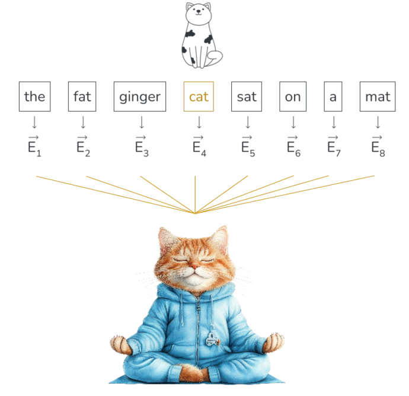
It the context contains adjectives (fat, ginger) which describes the appearance of cat
and also the verb sat and object mat which describes the position of the cat.
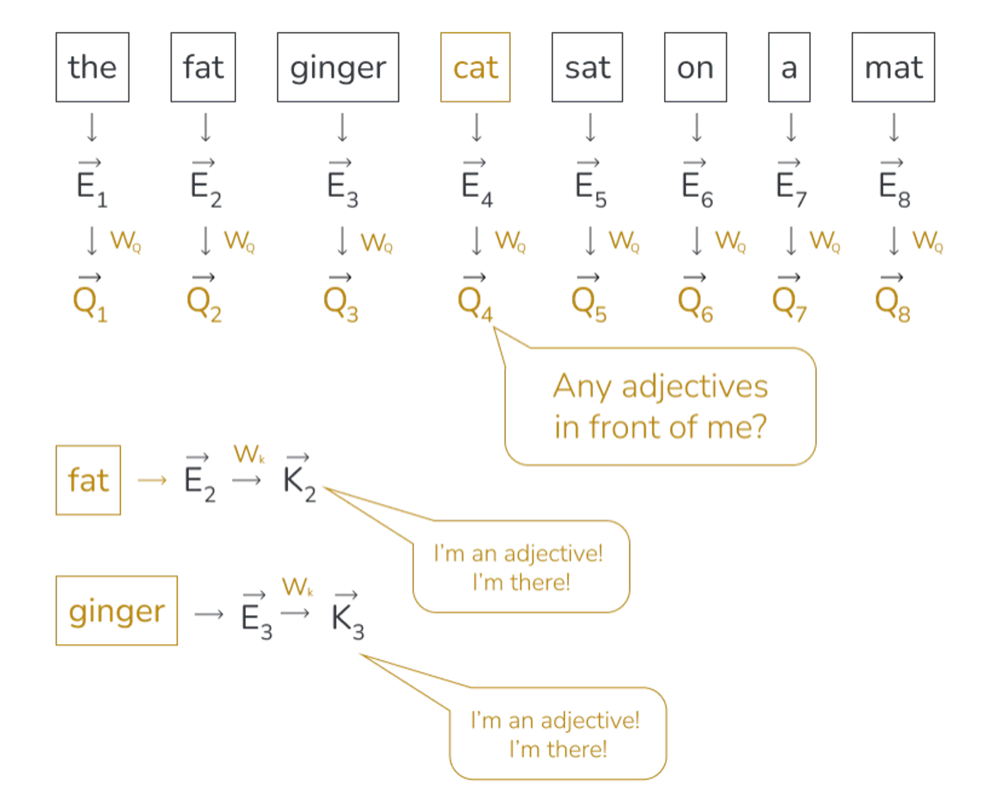
If we imagine that there exists a particular attention head which focussing on nouns. The query vector is like looking for labels with “adjective” on them to better understand the noun. In reality, this is much more abstract.
Causal masking¶
During next-token training, a decoder-only model must not use future tokens to predict an earlier token.
Consider:
The cat sat down
When the model predicts sat, it may use The and cat. It must not use
sat or down as input evidence for that prediction.
The model applies a causal mask to the attention scores:
key position
1 2 3 4
query 1 x - - -
query 2 x x - -
query 3 x x x -
query 4 x x x x
An x marks an allowed attention connection. A - marks a connection that is
masked before softmax.
Query-Key dot product¶
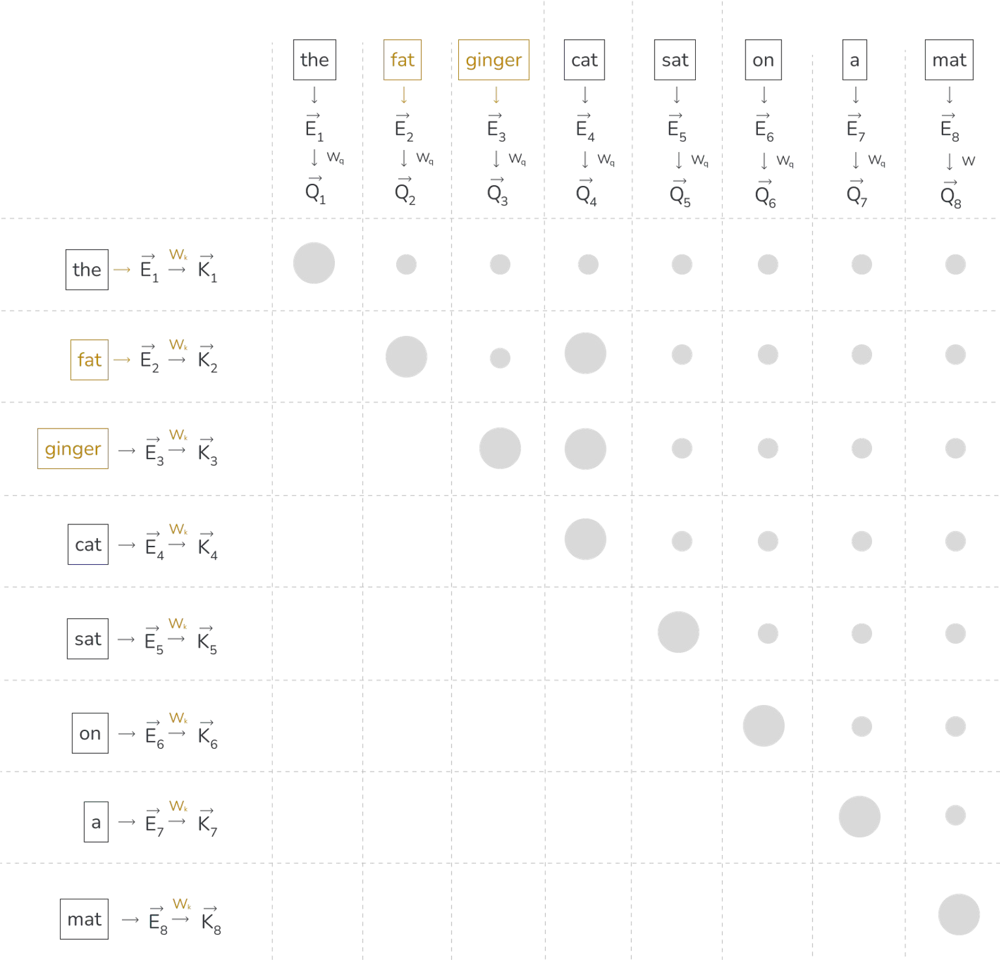
Compute the dot product with each query-key pair, to determine how well the key matches the query. Where the queries and keys align, the dot product is larger. Lower left dot products are masked, as we want the model to predict every next word during training. To prevent data leakage, future words should not influence previous ones.
During inference this is not very important (the future tokens do not exist yet), but it is essential in the training phase to prevent “cheating”.
From values to attention¶
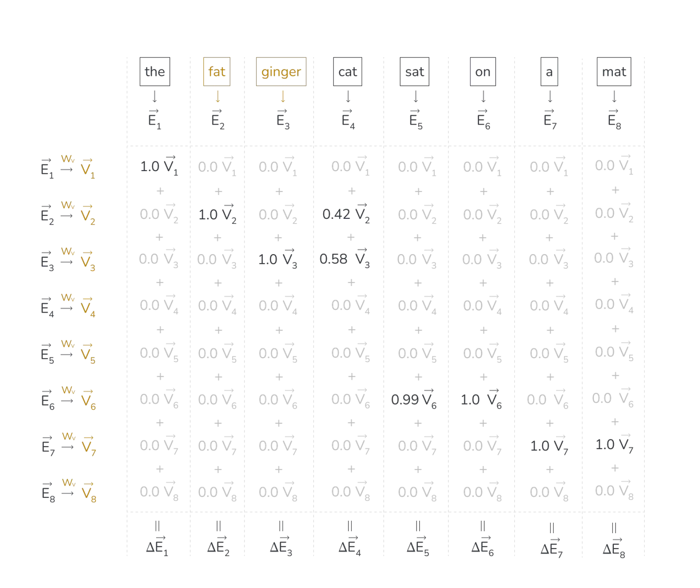
Value matrix multiplied by the embedding of the previous word results in the value vector
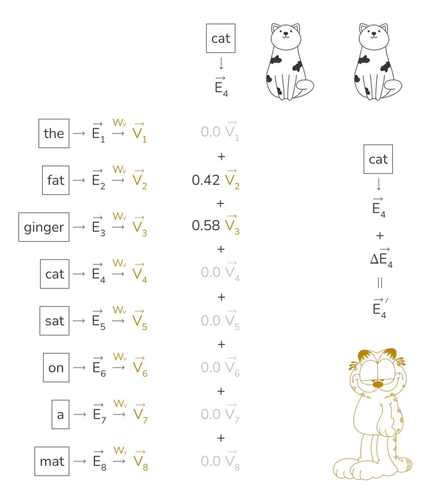
Each value vector is the multiplied by the corresponding weight and summed up to form the attention vector. This attention vector represents a “change” in the embedding to get an updated, richer meaning. Since this happens to every word in the sequences we end up with a set of more refined embeddings.
Sidenote: Context length and computational cost¶
For standard dense attention, a sequence containing (n) tokens produces an attention-score matrix containing (n^2) entries for every head.
Doubling the sequence length therefore produces approximately four times as many query-key comparisons. The total cost of a transformer also includes projection and feed-forward operations, so end-to-end scaling is more complicated than one formula suggests. Nevertheless, the quadratic attention matrix is an important reason why long contexts can be expensive. There are a few tricks to mitigate this, such as KV caching.
Multi-head attention¶
A transformer does not compute a single attention pattern. It computes several attention heads in parallel.
Each head has its own query, key, and value projections. This allows different heads to construct different patterns of information exchange. The outputs of the heads are concatenated and passed through another learned projection.
input representations
|
+-> attention head 1 --+
+-> attention head 2 --+
+-> attention head 3 --+-> concatenate -> output projection
+-> ... |
+-> attention head h --+
The number of heads is an architectural choice. More heads do not simply mean that the model has a corresponding number of human-interpretable rules.
Feed-forward networks¶
After attention has exchanged information between token positions, a feed-forward network transforms the representation at each position.
A simplified feed-forward operation is:
{kind=link}
The first projection usually expands the hidden representation to a larger intermediate dimension. A nonlinear activation is applied, followed by a projection back to the model’s hidden dimension.
The same feed-forward parameters are applied independently at each token position.
token position 1 -> same feed-forward network -> updated position 1
token position 2 -> same feed-forward network -> updated position 2
token position 3 -> same feed-forward network -> updated position 3
Attention and feed-forward layers therefore perform complementary work. Attention allows positions to exchange information. The feed-forward network then performs a richer transformation of each resulting representation.
Feed-forward layers contain a large fraction of the parameters in many transformer architectures. This gives them substantial representational capacity.
Where is model knowledge stored?
It is sometimes said that attention controls context while the feed-forward layers store knowledge. This can be a useful first approximation, but it is not a precise division.
Learned associations are distributed across embeddings, attention projections, feed-forward parameters, normalization, and the interactions between layers.
Residual connections and normalization¶
A transformer block does not replace its input representation outright. Residual connections allow a sublayer to contribute an update:
The original representation can therefore continue through the network while each sublayer adds new information.
Normalization controls the scale of activations and makes deep networks easier to train. Different architectures place normalization before or after the attention and feed-forward operations, but its general purpose remains training stability.
From representations to token probabilities¶
After the final transformer block, the model converts the representation at the relevant sequence position into one score for every token in the vocabulary. These scores are called logits.
Softmax turns the logits into a probability distribution:
"the" 0.31
"a" 0.14
"this" 0.08
"model" 0.03
... ...
A decoding strategy then selects the next token. Always choosing the most probable token is called greedy decoding. Other strategies sample from the distribution, possibly after adjusting it through temperature, top-k, or top-p sampling.
The selected token is appended to the input, and the process is repeated.
prompt
-> predict one token
-> append token
-> predict another token
-> append token
-> continue until stopping
A fluent response is therefore constructed through repeated next-token prediction, not by producing a complete paragraph in a single operation.
Exercise: Trace information through the model¶
Trace a forward pass
Consider the prompt:
The experiment failed because the input file was
Describe what happens between receiving this text and producing a probability for the next token.
Your explanation should include:
tokenisation;
the embedding lookup;
positional information;
attention;
the feed-forward layers;
output logits and softmax.
Do not try to predict the exact tokeniser output or the exact next token.
exercise-forward-pass
The tokenizer divides the text into tokens and maps those tokens to integer IDs. The embedding layer maps each ID to an initial vector, and the model incorporates positional information so that token order is represented.
The vectors pass through a sequence of transformer blocks. Masked self-attention lets each position combine information from earlier positions but prevents access to future positions. Feed-forward layers transform each contextual representation independently. Residual connections and normalization support the flow of information through the blocks.
After the final block, the representation at the last input position is projected to one logit for every vocabulary token. Softmax converts the logits into probabilities. A decoding strategy selects the next token from that distribution.
Exercise: Attention and masking¶
Construct a causal mask
Write the causal attention mask for a sequence of five tokens.
Then answer:
How many positions can token 1 attend to?
How many positions can token 5 attend to?
Why is the mask needed during training even though the complete training sentence is already available?
exercise-causal-mask
The mask is:
key position
1 2 3 4 5
query 1 x - - - -
query 2 x x - - -
query 3 x x x - -
query 4 x x x x -
query 5 x x x x x
Token 1 can attend to one position. Token 5 can attend to all five positions, including itself.
The complete sentence is available during training so that predictions for many positions can be computed efficiently in parallel. Without the mask, the model could inspect the tokens it is meant to predict. That would leak the answers into the input and would not reproduce the autoregressive conditions used during generation.
Training pipeline¶
When a LLM is first trained, three steps are usually involved:
Pretraining: the model is trained on large unstructured corpora of text, in an unsupervised manner, just trying to predict the next token. This is what gives origin to the base models, which understand language constructs and syntax.
Supervised fine-tuning (SFT): the model is trained on question-answer pairs, possibly with reasoning traces. This is when model are actually trained to perform a task (coding assistant, chat interface, etc.) and produces the so-called “instruct” models.
Reinforcement/alignment training: the model is trained using reinforcement learning techniques, like DPO and GRPO, to influence its alignment to human values and teach it how to reply in a way that better reflects human preferences. After this it is usually ready to ship.
The fine-tuning that is the subject of this course is, essentially, a repetition of step 2.
Summary¶
A language model begins by dividing text into tokens. Token IDs are mapped to initial vectors, and positional information records where those tokens occur in the sequence.
Transformer blocks repeatedly update the representations. Attention exchanges information between token positions. Queries and keys determine which positions are relevant, while values contain the information that is combined. Causal masking prevents a decoder-only model from using future tokens.
Feed-forward layers transform each contextual representation independently. Residual connections and normalization make it possible to train a deep stack of these operations.
Finally, the model converts the last representation into logits and then into a probability distribution over the vocabulary. Text generation repeats this next-token prediction process until a stopping condition is reached.
Choosing an adaptation strategy - aka when NOT to fine-tune¶
When an LLM application performs poorly, fine-tuning is rarely the first or only possible response. The model may need clearer instructions, better context, access to external information, or a more suitable evaluation procedure.
Prompt engineering, retrieval-augmented generation, and fine-tuning address different sources of failure:
Prompt engineering:
change the instructions and examples
Retrieval-augmented generation:
supply external evidence at inference time
Fine-tuning:
change model parameters through training
These methods can be combined, but they should not be introduced indiscriminately. Every additional component has to be developed, evaluated, operated, and maintained.
Questions
What can prompt engineering change?
When does a model need retrieval rather than better instructions?
What kinds of behaviour justify fine-tuning?
Why is fine-tuning a poor substitute for a document store?
How can we evaluate whether additional complexity is worthwhile?
When should we decide not to fine-tune?
Objectives
By the end of this episode, learners should be able to:
distinguish a problem with instructions from a problem with evidence;
explain what prompt engineering, RAG, and fine-tuning change;
recognize applications for which fine-tuning is unnecessary or inappropriate;
choose an initial adaptation strategy for a concrete use case;
define a baseline against which a more complex system can be evaluated;
separate retrieval failures from generation failures;
describe when RAG and fine-tuning may usefully be combined.
How can we influence a model?¶
The progression from prompting to RAG to fine-tuning represents increasing system complexity.

Prompt engineering changes the instructions. RAG adds external evidence. Fine-tuning changes model parameters.¶
The progression should not be interpreted as a sequence that every project must complete. A prompt-only system is not an unfinished RAG system, and a RAG system is not an unfinished fine-tuning project.
The objective is to find the least complex system that meets the application’s requirements.
The central diagnostic question
Is the model failing because it does not know what to do, because it lacks the necessary evidence, or because it cannot reliably perform the required behaviour?
Those three cases point toward prompting, retrieval, and fine-tuning respectively. Real systems may contain more than one kind of failure, but the distinction provides a useful starting point.
In-context learning¶
In-context learning (ICL) is an advanced AI capability introduced in the seminal research paper Language Models are Few-Shot Learners (2020) which unveiled GPT-3. Unlike supervised learning (or, in other words fine-tuning], where a model undergoes a training phase with backpropagation to alter its parameters, ICL relies entirely on pretrained language models and keeps their parameters unchanged. … At its core, in-context learning works by conditioning a large language model (LLM) on a prompt that includes a set of examples (input/output pairs or in-context examples) typically written in natural language as part of the input sequence. These examples, often drawn from a dataset, are not used to retrain the model but are fed directly into its context window. This window shows the amount of text an LLM can process at once, acting as its temporary memory for generating coherent responses and is the part of the model that processes sequential input.
—J. Varughese, IBM
In-context learning can be acheived by several methods.
Prompt engineering: prompt templates, few-shot prompting, modifying system prompt
Retrieval Augmented Generation (RAG)
Model Context Protocol and tool-calling, in general (not covered here).
Memory system (also not covered here).

In 2026, a good majority of AI engineering is just context engineering.¶
Image credit: Anthropic.
Prompt engineering¶
Prompt engineering changes the model’s input. It does not update the model parameters.
A prompt can specify the task, the intended reader, the required structure, the available evidence, and what the model should do when it cannot answer. It can also contain examples of suitable inputs and outputs.
Consider this prompt:
Summarize this paper.
A more useful version might be:
Summarize the supplied paper for research software engineers who understand
machine learning but are not specialists in this application domain.
Use the following headings:
- Research question
- Method
- Main result
- Limitations
- Reproducibility
Use at most 300 words. Do not invent information that is absent from the
paper. If reproducibility information is not reported, write "not reported in
the supplied text".
The second prompt reduces ambiguity. It defines the audience, structure, length, and handling of missing information. Breaking a task into different steps or giving examples of good and bad behaviour in the prompt can also be very useful in many cases.
When prompting is enough¶
Prompt engineering is often sufficient when the base model already has the required capability and all necessary information can be included in the context.
Examples include rewriting text for a known audience, extracting fields from a short document, producing a specified format, explaining supplied material, or generating a first draft that will be reviewed by a person.
If a model produces good content under the wrong headings, the first response should be to specify the headings: training a model to solve a problem that can be expressed in two lines of instructions is difficult to justify.
A generative model may produce different wording across repeated calls. If the application requires a rigid structure, first try explicit output constraints, examples, schema validation, and deterministic or low-temperature decoding.
Fine-tuning may improve consistency, but it should not be the first mechanism used to impose a simple format.
Retrieval-augmented generation¶
Retrieval-augmented generation (RAG) adds an external information-retrieval stage.
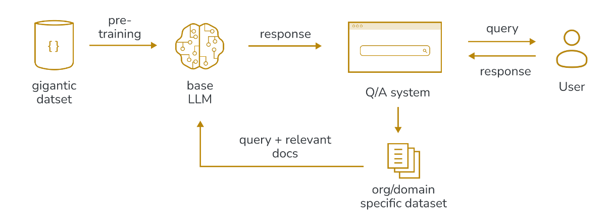
A simplified RAG system looks like this:
user question
-> retrieval query
-> relevant passages
-> prompt containing question and passages
-> generated answer
The model parameters are not normally changed. The model receives additional evidence as part of its input.
What problem does RAG solve?¶
RAG is appropriate when the model cannot answer reliably from its existing parameters and the required information exists in an external collection.
Typical collections include internal documentation, scientific papers, technical manuals, organizational policies, support records, and databases whose contents change over time.
Retrieval is also useful when an answer must be accompanied by inspectable sources. A model may have encountered a fact during pretraining, but its parameters do not provide a dependable citation mechanism. A RAG system can retain the identifiers of the retrieved passages and ask the model to cite them.
A basic grounded-generation prompt could be:
Answer the question using only the supplied sources.
If the sources do not contain enough information, state that the available
evidence is insufficient.
Cite the source identifier after every factual claim.
Question:
{question}
Sources:
{retrieved_passages}
This prompt does not by itself create a reliable RAG system. The documents must be indexed, the query must retrieve useful passages, and the selected context must preserve the information needed to answer the question.
When RAG is worth introducing¶
RAG is a strong candidate when the application depends on information that is private, frequently updated, too large to include in every prompt, or expected to be cited.
It is less useful when the problem contains no substantial knowledge-retrieval component. If the task is to convert a known input into a fixed schema, adding a vector database may introduce infrastructure without addressing the actual failure.
RAG does not eliminate hallucinations (but can help greatly!)
Retrieval can ground the response in external evidence, but the model can still misread, ignore, or go beyond that evidence.
A grounded system needs explicit instructions, suitable retrieval, source tracking, and an evaluation that checks whether claims are supported.
Fine-tuning¶
Fine-tuning continues training a pretrained model on examples chosen for a particular objective. It changes some or all of the model parameters (or, sometimes, introduce a few new ones altogether).
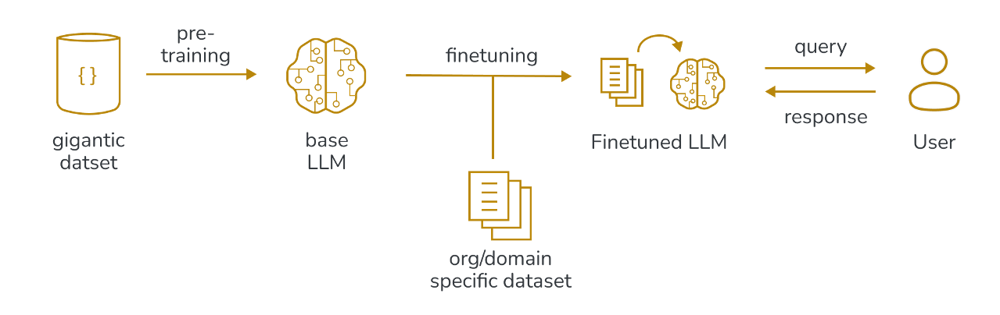
This makes fine-tuning fundamentally different from prompting and retrieval: a prompt or retrieved document can be replaced immediately, while a parameter update is produced through a training process and is less directly inspectable.
Fine-tuning is most useful when the remaining problem is a repeated, measurable pattern of behaviour. Examples include using a specialized output representation, mapping recurring inputs to recurring outputs, or following domain/style conventions that are cumbersome to demonstrate in every prompt.
Fine-tuning may also teach a model to use specialist vocabulary more consistently.
When not to fine-tune¶
Fine-tuning is often proposed too early. Before training, it is worth checking whether the proposed use case matches any of the following situations:
The model needs access to policies, publications, software documentation or other information that changes in time (not too fast, hopefully). In these cases, RAG is usually a better place to start: injecting a lot of new information by updating model weights is not an effective update mechanism.
Traceability and explainability are required: once more, RAG is the better route.
The model is prompted in a vague way (e.g. “Summarise this”). Since the model knows nothing about what the user actually want, the first (and often only) step is to improve (a lot) the prompt.
The problem is with constraints, e.g. we want the output to be JSON only. In these cases, prompt engineering (possibly with examples) is paramount. If performance is still unsatisfactory, fine-tuning can improve format adherence, especially at scale and with smaller models.
There is no evaluation set: the only way to judge whether the fine-tuned model behaves better than baseline is to test on a hold-out evaluation set, or with user A/B testing in production. Without metrics for success, fine-tuning becomes a useless exercise (and may even lead to loss of performance in other general tasks).
There are not enough representative examples, since repetitive examples can easily lead to overfitting.
A practical decision process¶
The adaptation decision begins with a failure analysis rather than a choice of technology.
Establish the task and evaluation¶
Write down what a satisfactory output looks like. Assemble examples that cover ordinary cases, difficult cases, ambiguous cases, and cases where the system should decline to answer.
The evaluation need not initially be large. It does need to be representative enough to expose whether a change solves the intended problem.
Build a prompt baseline¶
Create the simplest prompt that specifies the task, context, constraints, output, and abstention behaviour. Include examples where they clarify the desired mapping.
Run the evaluation set and record the results. This baseline provides evidence against which retrieval or fine-tuning can be compared.
Add retrieval if evidence is missing¶
Inspect failed examples. If the model could answer correctly when given the right document passage, the problem points toward retrieval.
Evaluate whether the retrieval stage finds that passage. Do not evaluate only the final prose.
Consider fine-tuning for persistent behaviour¶
Fine-tuning becomes reasonable when the system has appropriate instructions and evidence but still fails in a repeated, measurable way.
At that point, the training examples can target a stable behaviour rather than compensating for an undefined prompt or missing source.
The resulting process is:
define success
-> build a prompt baseline
-> inspect failures
-> add retrieval if evidence is missing
-> inspect failures again
-> fine-tune if behaviour remains inadequate
Combining RAG and fine-tuning¶
RAG and fine-tuning are not mutually exclusive.
A useful division of labour is that RAG supplies the evidence, whereas fine-tuning teaches the model how to use it.
For example, a technical assistant may need retrieval to access the current software documentation, but may also benefit from fine-tuning if it systematically fails to express commands according to an organization’s conventions.
It is worth noting that the combined system is more complex than either component alone. Thus, its evaluation must determine whether a failure came from retrieval, prompting, the fine-tuned behaviour, or the interaction between them.
Evaluating the adaptation ladder¶
Evaluation should precede an increase in complexity: otherwise, there is no reliable way to tell whether the additional component helped.
Evaluate more than fluency¶
A response can sound better without becoming more correct. Evaluation should therefore separate dimensions that matter to the application.
For a document question-answering system, useful dimensions might include factual support, citation correctness, completeness, appropriate abstention, latency, and cost.
For a structured extraction task, useful dimensions might include field accuracy, schema validity, handling of missing values, and robustness to unusual inputs.
Evaluate RAG in parts¶
A RAG system has at least three evaluation targets:
Retrieval:
Did the system retrieve the evidence required to answer?
Generation:
Did the model use the retrieved evidence correctly?
End-to-end:
Did the user receive a satisfactory answer?
A good final answer does not prove that retrieval is robust. The model may already know the answer or may have guessed correctly. Conversely, a poor final answer does not prove that retrieval failed. The correct source may have been present but used incorrectly.
Evaluate fine-tuning against meaningful baselines¶
A fine-tuned model should be compared with the unchanged base model using the best prompt developed during exploration.
Depending on the application, the comparison may also include:
base model with a simple prompt
base model with the strongest prompt
(if RAG is used) base model with prompt and retrieval
(if RAG is used) fine-tuned model with the same retrieval
This prevents a training run from receiving credit for improvements that came from a better prompt, a changed dataset, or a different retrieval setup.
Held-out evaluation is essential: examples used during training cannot show whether the model generalizes to new inputs.
Automated and human evaluation¶
Automated checks work well when correctness can be defined precisely. Schema validation, exact field comparison, classification scores, citation matching, and retrieval recall are useful examples.
Human evaluation is needed when quality depends on context, usefulness, or specialist judgment.
Another language model can assist with evaluation (LLM-as-a-judge), but its judgement must be also tailored to human preference. However, it can be useful in cases when the objective function is somewhat subjective, such as verbosity, complexity or general style. The section on evaluating large language models describes these approaches and their limitations in more detail.
Exercise: Choose the first intervention¶
Choose an adaptation strategy
For each scenario, decide what you would try first:
prompt engineering;
prompt engineering with RAG;
fine-tuning after establishing a prompt baseline;
RAG followed, if necessary, by fine-tuning.
Explain what kind of failure you expect the chosen approach to address.
A model must answer questions about policies that change every month and cite the relevant section.
A model writes useful summaries but uses the wrong headings.
A model must convert thousands of recurring incident reports into a strict internal representation.
A support assistant must use the current documentation and express commands according to an organization’s conventions.
A model must answer questions about a collection of papers that is updated every week.
exercise-adaptation-strategy
For the monthly policies, start with prompt engineering and RAG. The dominant problem is access to changing, citable evidence.
For the incorrect headings, start with prompt engineering. The desired change is simple to specify and should not initially require training.
For recurring incident reports, establish a prompt baseline first. Fine-tuning may become worthwhile if the mapping is stable, the volume is high, representative examples are available, and prompt-based output remains insufficiently reliable.
For the support assistant, use RAG to provide current documentation. If a strong prompt does not produce the required command style consistently, fine-tuning may then be justified for the behavioural part of the task.
For the changing paper collection, start with prompt engineering and RAG. The collection should be updateable independently of the model parameters.
Exercise: Decide whether to fine-tune¶
Fine-tuning readiness review
A team proposes fine-tuning a model on 200 internal question-answer pairs.
The stated goal is:
We want the model to know our documentation and stop hallucinating.
Before approving the training work, write at least five questions that the team should answer.
Identify which answers would suggest that fine-tuning is premature.
exercise-finetuning-readiness
Useful questions include:
How often does the documentation change?
Must answers cite a document or section?
Has the team evaluated a prompt-only baseline?
Has the team evaluated a retrieval-based baseline?
Are the 200 examples representative of real questions?
Is there a held-out evaluation set?
What does “stop hallucinating” mean in measurable terms?
Do failures occur because evidence is missing, or because the model uses available evidence incorrectly?
What should the system do when the documentation does not contain an answer?
Who will maintain and evaluate the model when documentation changes?
Fine-tuning is premature if the documentation changes regularly, citations are required, retrieval has not been tested, the same examples will be used for training and evaluation, or success has not been defined.
The phrase “know our documentation” points primarily toward retrieval. The team may later fine-tune how the model responds to retrieved material, but retrieval and abstention should be addressed first.
Summary¶
Prompt engineering, RAG, and fine-tuning change different parts of an LLM application.
Prompt engineering changes the instructions and examples. It is the correct starting point when the model already has the necessary capability and evidence.
RAG retrieves external information and includes it in the model’s context. It is the usual choice for private, changing, extensive, or citable knowledge.
Fine-tuning changes model parameters. It is best suited to stable and repeated behavioural patterns that remain inadequate after a strong prompt baseline and, where necessary, reliable retrieval.
The progression is therefore not:
start simple -> eventually fine-tune
It is:
start simple
-> evaluate
-> diagnose the remaining failure
-> introduce only the component that addresses that failure
Fine-tuning is usually the wrong response when the model needs current documents, citations, clearer instructions, a simple output constraint, or a working retrieval system. It is also premature when there is no representative training data or held-out evaluation set.
Fine-tuning large language models¶
Fine-tuning continues the training of a pretrained model using examples selected for a particular task or behaviour.
Unlike prompt engineering and retrieval-augmented generation, fine-tuning changes model parameters. The resulting behaviour is encoded in a new set of weights or in a smaller set of adapter parameters.
Fine-tuning can be useful, but it introduces a complete training lifecycle: the process needs suitable data, an objective, a validation strategy, hyperparameters, experiment tracking, model artifacts, and an evaluation that goes beyond training loss.
Questions
What changes during fine-tuning?
What kinds of behaviour can fine-tuning teach?
How does full fine-tuning differ from parameter-efficient fine-tuning?
What is low-rank adaptation?
Which transformer layers can receive LoRA adapters?
What must be prepared before training begins?
How do we determine whether fine-tuning improved the application?
Objectives
By the end of this episode, learners should be able to:
explain how fine-tuning differs from prompting and retrieval;
identify tasks for which fine-tuning is a reasonable intervention;
describe the practical costs of full fine-tuning;
explain the idea behind parameter-efficient fine-tuning;
describe LoRA as a low-rank update to frozen model weights;
explain why LoRA target modules depend on model architecture;
identify the data and evaluation requirements for a fine-tuning project;
distinguish training progress from evidence of generalization.
What fine-tuning changes¶
A pretrained language model contains parameters learned from a large collection of training data. During fine-tuning, the model processes examples that represent a more specific objective. Gradients computed from those examples update some or all of the model parameters.
For supervised fine-tuning, an example commonly contains an input and a desired response:
Input:
Summarize the incident report using the required internal schema.
Desired response:
{
"category": "resource_exhaustion",
"component": "gpu",
"action": "reduce_batch_size"
}
Fine-tuning is well suited to stable patterns that occur repeatedly. Thus, a particular application might use fine-tuning to improve adherence to a specialized output format, apply domain-specific labels, produce a consistent response style, or map recurring inputs to recurring outputs.
Fine-tuning can change the factual associations produced by a model, but this does not make it a suitable document database like RAG; however,it may combine the new examples with associations learned during pretraining. Updating or removing a fact requires another model update, and the effect of that update may not be isolated.
Usually, two types of fine-tuning can be performed: full fine-tuning and parameter-efficient fine-tuning.
Full fine-tuning¶
In full fine-tuning, every trainable parameter in the model is updated.
For a model with billions of parameters, this creates substantial resource requirements. The device must hold the model weights, gradients, optimizer state, activations, and temporary buffers used by the training operations. In particular, the optimizer state can be particularly expensive, since an optimizer may maintain multiple values for every trainable parameter. The cost for full fine-tuning is comparable to that of pretraining, since all parameters need updating. Full fine-tuning also produces a complete new set of model weights. If several tasks require separate models, storage and deployment costs grow quickly.
When full fine-tuning may be justified¶
Full fine-tuning offers the greatest flexibility because updates are not restricted to selected components. It may be appropriate when the task requires broad changes, the training dataset is sufficiently large, and the project has the compute and evaluation capacity to manage the resulting model.
These conditions are demanding. For many organizational and workshop use cases, parameter-efficient fine-tuning is the more practical starting point.
More trainable parameters are not automatically better
Updating the whole model increases capacity, but it also increases memory use, storage, and the risk of changing useful existing behaviour.
The choice between full and parameter-efficient fine-tuning should be based on measured task performance rather than on the assumption that a larger update must be superior.
Parameter-efficient fine-tuning¶
Parameter-efficient fine-tuning (PEFT) keeps most pretrained parameters frozen and learns a much smaller set of task-specific parameters.
The base model still participates in every forward pass. Freezing the base model does not remove the need to load it or execute its layers. The main training savings come from not storing gradients and optimizer states for all base-model parameters.
There are several PEFT methods, such as low-rank adapters (LoRA), adapter layers and Infused Adapter by Inhibiting and Amplifying Inner Activations (IA3), which differ in where the trainable parameters are added and how they interact with the frozen model. LoRA is one of the most widely used approaches.
Low-rank adaptation¶
Suppose a pretrained layer contains a weight matrix:
Full fine-tuning would learn an unrestricted update of the same shape:
LoRA represents the update as the product of two smaller matrices:
where:
and:
The rank (r) is chosen to be much smaller than the input and output dimensions.
The adapted computation can be written as:
The original matrix (W) remains frozen. Only (A) and (B) are trained.
Conceptually:
large frozen weight matrix
+
small trainable low-rank update
=
adapted layer
Why does a low-rank update help?¶
Fine-tuning does not necessarily require an independent change in every direction of a large weight matrix. For many adaptation tasks, a lower dimensional update can provide enough capacity to shift the model’s behaviour.
LoRA makes this assumption explicit by restricting the update to a matrix whose rank is at most (r).
This reduces the number of trainable parameters from:
to:
For large projection matrices and a small rank, the difference can be substantial.
Tunables¶
The following hyperparameters need to be estimated when performing a LoRA:
Rank
r: maximum rank of the learned update. A higher rank can provide more adaptation capacity, but makes the process more expensive. Depending on model and dataset size,rusually ranges between 8 and 64. 16 is a good place to start for many experiments.Scaling factor \(\alpha\): usually the adapter contribution is scaled by \(\alpha/r\) to control the influence of the LoRA adapter compared to the base model. It can also range commonly from 8 to 64 or more, with 32 being a sweet spot based on the empirical rule of \(\alpha=2r\).
Dropout: same as “normal” neural network training, i.e. intentionally switching off part of the adapter to avoid overfitting, especially for small datasets. Common values range from 0 (no dropout, especially on large datasets) to 0.1 (very small). 0.05 is often a sweet spot.
These tunables tend to play a smaller role than most people assume, whereas dataset quality is the real knob that can dramatically change results.
Where LoRA adapters are placed¶
LoRA is applied to linear transformations in the model. Attention projections are common targets:
query projection
key projection
value projection
attention output projection
Many implementations name these modules using forms such as:
q_proj
k_proj
v_proj
o_proj
The names are conventions, not a universal interface.
Adapters may also be placed on feed-forward projections. A gated feed-forward network may contain modules with names resembling:
gate_proj
up_proj
down_proj
Targeting more modules gives the adapter more ways to modify the model. It also increases the number of trainable parameters and the computational cost of the adapter path.
Why attention projections are common targets¶
Attention projections determine how token representations are converted into queries, keys, values, and attention outputs. Adapting those projections can change which contextual relationships the model emphasizes and how information is exchanged between positions.
This makes attention projections a natural target for tasks that require a change in how the model responds to context.
Feed-forward layers also contain substantial capacity. Including their projections can improve adaptation for some tasks, although the additional parameters should be justified through evaluation.
Preparing fine-tuning data¶
A fine-tuning dataset should represent the behaviour expected in deployment.
For an instruction-tuned chat model, examples are often represented as messages:
{
"messages": [
{
"role": "user",
"content": "Explain why this training run failed."
},
{
"role": "assistant",
"content": "The run exhausted device memory while allocating..."
}
]
}
The model’s chat template converts the messages into the control tokens and text format expected by that model.
Using the correct template matters. A model trained with one conversation format may not interpret another model’s role markers as intended.
What kind and how much data do I need?¶
As it might be expected, there is no one-size-fits-all recipe for the type and quantity of data needed for fine-tuning, which can vary wildly based on task and base model size.
A general indication is that data should be as representative as possible, covering the same variation found in real inputs. It should cover examples that are routine, difficult, ambiguous, or where the expected answer is “I do not know”. Generally speaking, less good examples are better than many low-quality ones (e.g. duplicates, inconsistent formatting, incorrect answers, etc.). As stated many times, good segregation between training, validation and test data is paramount.
When it comes to quantity, the answer varies based on task complexity, type of fine-tuning and base model size:
Full fine-tuning generally needs more data than LoRA, since all parameters can change and this can lead to a higher risk of overfitting or loss of useful pretrained behaviour. A good rule of thumb is that full fine-tuning should be attempted when the number of available examples is at least in the order of tens of thousands.
LoRA, on the other hand, can require just a few hundreds/thousands of well-curated examples if the task is narrow. More varied generative tasks would put us back in the tens of thousands of needed examples.
Generally speaking, if attempting LoRA, a larger model tends to need less examples for narrow tasks. This is because a large, capable model may already have the knowledge necessary to carry out the task, and just needs to be “nudged” to behave in a certain way.
Representative data¶
Representative data covers the variation expected in real inputs. It should include routine examples, difficult cases, ambiguous cases, long and short inputs, and examples where the correct response is to refuse or state that information is missing.
Repeatedly generating examples from one template may produce a large dataset without producing meaningful diversity.
Quality is also more important than raw example count. Incorrect answers, inconsistent formatting, duplicated examples, and accidental sensitive data can all become part of the learned behaviour.
What should contribute to the loss?¶
For assistant-response training, the input conversation provides context while the desired assistant response provides the prediction target.
A common approach masks user and system tokens in the labels:
system message -> context, ignored by loss
user message -> context, ignored by loss
assistant response -> context and prediction target
The input is still needed because the assistant response must be conditioned on the request. Masking a token from the loss does not remove it from the model input.
Different objectives may use different masking strategies. The important point is to decide explicitly which tokens the model is being trained to predict.
Training configuration¶
A training configuration controls both optimization and resource use.
The most visible parameters include learning rate, number of epochs, batch size, gradient accumulation, maximum sequence length, evaluation frequency, and checkpoint frequency.
These quantities interact. Changing one may alter memory use, runtime, or the number of parameter updates.
Batch size and gradient accumulation¶
The per-device batch size is the number of examples processed by one device in one forward and backward pass.
Gradient accumulation performs several such passes before applying an optimizer step. With data-parallel training, the effective batch size is:
For example:
per-device batch size 4
number of devices 2
gradient accumulation 8
effective batch size 64
Gradient accumulation can produce a larger effective batch without storing all examples’ activations simultaneously. It does not avoid their computation. Eight accumulation passes still require eight forward and backward passes.
Sequence length¶
Sequence length has a strong effect on memory and runtime. Longer sequences require more activation memory, and standard dense attention forms a quadratic attention matrix.
A batch size that works for short examples may fail when the batch contains long examples.
Packing¶
Packing places several short examples into one fixed-length training sequence. This reduces computation wasted on padding.
Without packing:
example 1 + padding + padding + padding
example 2 + padding + padding + padding
With packing:
example 1 + example 2 + example 3 + remaining padding
The dataloader batch size still refers to packed sequences, not to the number of original examples contained inside them. One packed sequence may contain several short examples.
Packing can improve throughput for datasets with many short records. It does not increase the configured context length, and examples must remain properly separated so that labels and attention behaviour follow the intended training objective.
Learning rate and warmup¶
The learning rate controls the scale of optimizer updates. An excessively large learning rate may destabilize training or damage useful pretrained behaviour. An excessively small learning rate may produce little adaptation within the available training time.
Warmup starts with a smaller learning rate and increases it during the early part of training. This can reduce instability before the optimizer has established useful parameter statistics.
The appropriate values depend on the optimizer, effective batch size, model, adapter configuration, and dataset. Training loss and validation behaviour should be observed together.
Training duration¶
More epochs expose the model to the training examples more times. This may improve learning initially, but eventually increases the risk of overfitting.
A small dataset can be memorized quickly. The best checkpoint is not necessarily the final checkpoint.
Evaluate at useful intervals and retain enough checkpoint information to compare validation results rather than relying only on the last training step.
Evaluation during fine-tuning¶
Training loss answers a narrow question: how well does the current model predict the training targets?
It does not show whether the model generalizes to new examples, whether the application has improved, or whether unrelated capabilities have degraded.
Validation loss¶
Validation loss applies the same token-prediction objective to examples that were not used for parameter updates.
If training loss continues to fall while validation loss stops improving or begins to rise, overfitting is a possible explanation.
Validation loss is useful, but application-level evaluation remains necessary. A small change in language-model loss may not correspond to a meaningful change in task quality.
Task evaluation¶
The evaluation should match the intended behaviour.
For structured output, measure whether the response parses and whether the fields are correct. For classification, use suitable class-level metrics. For summarization or open-ended generation, combine human review with checks for required content, unsupported claims, format adherence, and omissions.
Compare the fine-tuned model with the strongest non-fine-tuned baseline, not only with an unhelpfully vague prompt. This part is nowadays outsourced to an LLM (LLM as a judge), provided that it is first aligned with a human evaluator. See evaluating large language models for how this works and where it can fail.
Regression evaluation¶
Fine-tuning may improve the target task while changing other behaviour.
A regression set should cover important capabilities that the adapted model must retain. This may include general instruction following, multilingual inputs, code formatting, safety constraints, or appropriate abstention.
The contents of the regression set depend on the application. The important point is to decide what must not worsen before accepting the adapter.
Evaluation is part of fine-tuning
A training run without held-out evaluation is an experiment in optimisation, not evidence that the application improved.
Saving and deploying adapters¶
One advantage of LoRA is that the adapter is much smaller than the full base model.
The base model and adapter can be stored separately:
base model
+
task-specific adapter
=
adapted model
Several adapters can share the same base model artifact. This simplifies storage and makes the distinction between the original model and the task-specific update explicit.
For deployment, the adapter may be loaded alongside the base model. Some workflows also merge the adapter update into the base weights. Merging can simplify inference in environments that do not support adapters directly, but it produces another complete model artifact. Deploying a base model + a LoRA adapter is extremely common in image diffusion models, where a large backbone represent the baseline generation, and a swappable LoRA head is attached to tweak the style (very photorealistic, anime style, etc.).
A minimal fine-tuning workflow¶
A fine-tuning project can be organized as the following sequence:
define the target behaviour
-> build and evaluate a prompt baseline
-> collect representative examples
-> create train, validation, and test splits
-> select the base model and chat template
-> select full fine-tuning or PEFT
-> configure and run training
-> inspect validation and checkpoints
-> evaluate task performance and regressions
-> package the model or adapter
-> monitor behaviour after deployment
The training command occupies only one part of this sequence. Data definition and evaluation usually determine whether the result is useful.
Exercise: Count LoRA parameters¶
Count the adapter parameters
A linear layer has:
input dimension: 4096
output dimension: 4096
LoRA rank: 8
Calculate:
the number of parameters in the original weight matrix;
the number of trainable parameters in the two LoRA matrices;
the fraction of the original parameter count represented by the adapter.
Ignore biases.
exercise-lora-parameters
The original matrix contains:
parameters.
The two LoRA matrices contain:
parameters.
The ratio is:
The adapter therefore contains approximately (0.39%) as many parameters as the original matrix.
This calculation concerns one adapted matrix. A complete configuration may apply LoRA to many projections across all transformer blocks.
Summary¶
Fine-tuning changes model parameters by continuing training on examples of a target behaviour.
Full fine-tuning updates the complete model. It provides substantial capacity but has high memory, storage, and evaluation costs.
Parameter-efficient fine-tuning keeps most pretrained parameters frozen. LoRA represents selected weight updates as the product of two small matrices. This greatly reduces the number of trainable parameters and the associated optimizer state.
LoRA adapters are commonly applied to attention projections and may also be applied to feed-forward projections. The correct target-module names depend on the model implementation and must be inspected rather than copied uncritically from another architecture.
Evaluating large language models¶
Once a model has been trained, whether through the full training pipeline or through our own fine-tuning, we need to answer a simple question: is it any good?
For many machine learning models, this question has a fairly direct answer. An image classifier is compared with the correct labels, and accuracy summarises the result. A generative language model is harder to assess. Its output is free text, many different answers can be correct, and “good” can mean accurate, helpful, concise, safe, or well written, depending on who is asking.
This section describes the main ways a trained LLM can be evaluated, what each approach is useful for, and where each approach breaks down. It then looks at benchmarks, the most common way models are compared, and explains why a benchmark score should not be read as a direct measure of a model’s intelligence.
Questions
Why is evaluating a generative language model harder than evaluating a classifier?
What are the main ways of evaluating a trained LLM?
What are the limitations of each evaluation approach?
How does LLM-as-a-judge work, and when can it be trusted?
What do benchmark scores tell us, and what do they not tell us?
What changes when the model is evaluated in a language other than English?
Objectives
By the end of this section, learners should be able to:
explain why a single number rarely captures the quality of generated text;
describe loss-based, reference-based, verifiable, human, model-based, and preference-based evaluation;
identify the main limitation of each evaluation approach;
describe the common biases of LLM judges and how to reduce them;
explain contamination, saturation, and reproducibility problems in benchmarks;
interpret a reported benchmark result with appropriate caution;
recognise the additional difficulties of evaluating non-English output.
Why evaluating an LLM is hard¶
Consider the prompt “Summarise this article in three sentences”. There is no single correct summary. Two good summaries may share very few words, while a poor summary may copy many words from a good one.
The difficulty has several sources:
Many valid outputs. Open-ended tasks rarely have one correct answer to compare against.
Several quality dimensions. A response can be correct but unhelpful, helpful but too long, or fluent but unsupported by facts. These dimensions can conflict with each other.
Sensitivity to the setup. The same model can give different answers depending on the prompt wording, the chat template, and the sampling settings.
Fluency hides errors. Modern LLMs write confidently and grammatically even when the content is wrong, so a quick read can be misleading.
As a result, LLM evaluation is usually a combination of several methods rather than a single metric. The rest of this section describes those methods.
Ways to evaluate an LLM¶
The methods below are ordered roughly from the most automatic to the most human. Each one answers a slightly different question.
Loss and perplexity on held-out text¶
The simplest measurement uses the training objective itself. The model is given text it has not been trained on, and we measure how much probability it assigns to each actual next token.
The average negative log-likelihood of these tokens is the loss. Its exponential is called perplexity:
perplexity = exp( -(1/N) * sum over tokens of log p(token | previous tokens) )
Lower perplexity means the model is less “surprised” by the text. The validation loss discussed in fine-tuning large language models is this kind of measurement.
Useful for: tracking training progress, detecting overfitting, and comparing checkpoints of the same model on the same data.
Limitations:
It measures how well the model predicts text, not whether it follows instructions, reasons correctly, or gives helpful answers.
A model can have low perplexity and still produce repetitive or incorrect responses.
Perplexity values are not comparable between models that use different tokenisers, because the tokens being predicted are different.
Reference-based metrics¶
When a reference answer exists, the generated output can be compared with it automatically.
Exact match checks whether the output is identical to the reference, usually after normalising case and punctuation.
BLEU counts how many short word sequences (n-grams) in the output also appear in the reference. It was developed for machine translation.
ROUGE measures how much of the reference is covered by the output. It is commonly used for summarisation.
Useful for: tasks with short, well-defined answers, and translation or summarisation where a large set of references already exists.
Limitations:
Word overlap is not meaning. “The meeting was postponed” and “The meeting was moved to a later date” mean the same but share few words.
A single reference cannot represent all valid answers to an open-ended prompt.
These metrics say nothing about helpfulness, reasoning, or factual correctness beyond what the reference happens to contain.
Verifiable checks¶
For some tasks, correctness can be checked by a program rather than by comparing text.
Examples include:
running generated code against unit tests;
checking that a final numerical answer to a maths problem is correct;
validating that the output is valid JSON matching a schema;
confirming that a classification label belongs to the allowed set.
For code, results are often reported as pass@k: the probability that at least one of k generated attempts passes all tests.
Useful for: code, maths, structured extraction, and any task with a checkable outcome. These checks are cheap, fast, and reproducible.
Limitations:
They only exist for tasks where correctness can be defined precisely.
They check the outcome, not the quality of the reasoning or the style. Code can pass the tests and still be unreadable or insecure.
The checks are only as good as the tests. Weak tests accept wrong answers.
Human evaluation¶
People read the model’s outputs and rate them. Raters may give a score on a scale, compare two responses, or mark specific errors.
Good human evaluation uses a written rubric that defines what each score means, and separates dimensions such as correctness, helpfulness, clarity, and safety.
Useful for: open-ended tasks, subjective quality, specialist content, and as the reference against which cheaper methods are validated. It remains the closest thing to a gold standard.
Limitations:
It is slow and expensive, especially when domain experts are needed.
Raters disagree with each other. Agreement between raters should be measured and reported.
Because of the cost, evaluation sets tend to be small, so results can change noticeably with a few examples.
Raters are also influenced by length, confidence, and formatting, not only by content.
LLM-as-a-judge¶
A strong language model (the judge) is asked to evaluate the outputs of the model being tested. This approach has become very common because it combines some of the flexibility of human evaluation with the speed of automatic metrics.
The judge receives a prompt that usually contains:
a description of its role;
a rubric with clearly defined score levels;
the original user prompt;
the response or responses to evaluate;
the required output format, for example a JSON object with one field per dimension.
There are three common formats:
Single-response scoring:
rate one response on a fixed scale, for example 1 to 5
Pairwise comparison:
decide which of two responses to the same prompt is better
Reference-guided grading:
grade a response against a known correct answer
Pairwise comparison is usually more consistent than absolute scoring, because deciding which of two responses is better is easier than assigning a calibrated number. Asking the judge to write a short justification before giving the score also tends to produce more consistent results. Setting the sampling temperature to zero, or close to zero, makes the judge more reproducible.
Useful for: open-ended tasks at a scale where human evaluation is too expensive, and for dimensions such as style, tone, or verbosity that are hard to check with code.
Limitations: LLM judges have well-documented biases.
Bias |
What happens |
Common mitigation |
|---|---|---|
Position bias |
The judge prefers the response shown first (or second) |
Run each comparison twice with the order swapped; treat inconsistent results as a tie |
Verbosity bias |
Longer responses receive higher scores |
Instruct the judge not to reward length; compare responses of similar length |
Self-preference |
A model rates its own outputs, or outputs similar to its own, more favourably |
Use a judge from a different model family, or a panel of judges |
Confidence bias |
Confident but wrong answers score better than cautious correct ones |
Provide a reference answer; state in the rubric that correctness outweighs tone |
Format bias |
Bullet points and headings are preferred regardless of content |
Instruct the judge to ignore formatting unless it is part of the task |
There are further limitations that mitigation cannot fully remove:
Limited expertise. A judge cannot reliably evaluate content it does not understand, such as specialised medical or legal reasoning, or answers from a model stronger than itself.
Prompt sensitivity. Small changes in the rubric wording can change the scores. Results from different judge prompts are not directly comparable.
Circularity. If a model is trained using feedback from a particular judge and then evaluated by the same judge, it may learn to please the judge rather than to improve.
Unreliable explanations. The judge’s justification may not reflect why it chose a score, so it should be read as a hint rather than as proof.
Validate the judge before trusting it
An LLM judge is itself a measurement instrument that needs calibration. Before relying on it, have humans rate a sample of the same outputs (often a few hundred examples), measure how often the judge agrees with them, and inspect the cases where they disagree. Improve the rubric until agreement is acceptable for the task.
Human preference rankings¶
Preference rankings collect many pairwise human judgements at large scale. The best-known example is LMArena (formerly Chatbot Arena). Users submit a prompt, receive answers from two anonymous models, and vote for the one they prefer. The votes are combined into a ranking using a rating system similar to the Elo ratings used in chess.
Useful for: comparing general-purpose chat models on realistic prompts. Because the prompts come from real users rather than a fixed test set, the ranking is harder to memorise.
Limitations:
It requires a large and continuous stream of voters, so it is not practical for evaluating your own model on your own task.
The voters are self-selected and not representative of all users. They lean towards technical users, English, and tasks such as coding.
A single rating mixes many dimensions. A user may prefer a response because it is friendlier or better formatted, not because it is more accurate.
The rating cannot be broken down into specific capabilities.
Model developers can optimise for what voters like, which is not always the same as what is correct.
Comparing the methods¶
Method |
Cost |
Handles open-ended tasks |
Main limitation |
|---|---|---|---|
Loss and perplexity |
Very low |
No |
Measures prediction, not usefulness |
Reference-based metrics |
Low |
Poorly |
Word overlap is not meaning |
Verifiable checks |
Low |
No |
Only for checkable tasks |
Human evaluation |
High |
Yes |
Slow, expensive, small samples |
LLM-as-a-judge |
Medium |
Yes |
Biased; must be validated against humans |
Preference rankings |
Very high |
Yes |
Unrepresentative voters; one mixed score |
In practice, these methods are combined. Cheap automatic checks run often and cover the parts of the task that can be verified. Human evaluation, or an LLM judge validated against humans, covers the rest.
Automatic vs Human evaluation
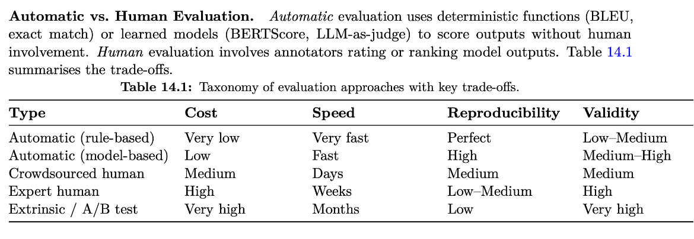
Roitman, Haggai. “The Hitchhiker’s Guide to Agentic AI: From Foundations to Systems.” arXiv preprint arXiv:2606.24937 (2026).
Keypoints
Simply speaking, the evaluation methods fall into either of these kinds:
Reference-based evaluation has some gold standard to compare to. Here the space of agreeable answers is typically small (e.g., yes/no answers, distance metrics etc.)
Reference-free evaluation doesn’t have a reference data-point, instead relies on something giving a judgement like human raters or LLM-as-a-judge.
If you can formulate your problem as reference-based, it will often make development easier, but with certain trade-offs.
Benchmarks¶
What a benchmark is¶
A benchmark is a fixed set of tasks with known answers, together with a scoring procedure. It works like a standardised exam: every model answers the same questions and receives a score, usually accuracy.
Most benchmarks use the methods described above. Multiple-choice benchmarks use exact match, coding benchmarks use unit tests, and some newer benchmarks use an LLM judge.
Benchmarks are the most common way to compare models. Model releases usually include a table of benchmark scores, and public leaderboards rank models by them.
Common benchmark families¶
The table lists a few well-known examples. It is not a complete list, and new benchmarks appear frequently.
Capability |
Example benchmarks |
What is tested |
|---|---|---|
General knowledge |
MMLU, MMLU-Pro |
Multiple-choice questions across dozens of academic and professional subjects |
Expert-level questions |
GPQA |
Difficult science questions written to be hard to answer with a web search |
Mathematical reasoning |
GSM8K, MATH |
Word problems and competition-style problems with a checkable final answer |
Code |
HumanEval, SWE-bench |
Writing functions that pass tests; fixing real issues in open-source repositories |
Instruction following |
IFEval |
Following checkable instructions, such as “answer in fewer than 100 words” |
Truthfulness |
TruthfulQA |
Avoiding popular misconceptions |
Safety |
Toxicity and bias test sets |
Avoiding harmful or discriminatory outputs |
Tools such as EleutherAI’s lm-evaluation-harness run many of these
benchmarks through a common interface, which makes it easier to evaluate a
model locally.
Why a benchmark score is not intelligence¶
Benchmarks are useful, but a high score does not mean that a model “knows” or “understands” a subject in the way a person who passed the same exam would. There are several reasons for this.
Contamination¶
LLMs are trained on very large collections of text from the internet. Benchmark questions and answers are often published online, so they can end up in the training data. A model may then answer correctly because it has seen the answer, not because it can solve the problem.
This is similar to a student who memorised last year’s exam. Contamination is difficult to rule out, because the training data of most models is not fully disclosed.
Saturation¶
When most strong models score above 90% on a benchmark, the remaining differences are small and often within noise. The benchmark no longer separates good models from very good ones. This has happened to several popular benchmarks, which is why harder replacements keep being created.
Brittleness¶
Benchmark performance can depend on surface details. A model may answer a question correctly in one phrasing and fail when the question is reworded or the answer options are reordered. A score on a fixed set of phrasings may overestimate how reliably the model handles the underlying skill.
Poor reproducibility¶
The reported score depends on many choices besides the model:
the exact prompt wording and chat template;
the number of worked examples included in the prompt (few-shot or zero-shot);
the sampling settings;
how the answer is extracted from the generated text;
the version of the benchmark and of the evaluation code.
Two teams evaluating the same model with slightly different settings can obtain noticeably different scores. Scores from different sources are therefore often not directly comparable.
Optimising for the score¶
When a benchmark becomes important, developers are tempted to optimise for it directly, for example by training on similar questions. This is an example of Goodhart’s law: when a measure becomes a target, it stops being a good measure. Public leaderboards have had to replace their benchmarks for this reason.
A narrow sample¶
A benchmark covers a limited set of tasks, formats, and languages, often multiple-choice questions in English. Your application is probably different. A model that ranks first on a general benchmark is not necessarily the best choice for extracting fields from Swedish invoices.
Reading a benchmark result¶
When you see a benchmark score, it helps to ask:
Which version of the benchmark was used, with which prompt and settings?
Were all compared models evaluated under the same conditions?
Is the difference between models larger than the expected noise?
Could the benchmark data have been included in training?
Is the benchmark close to saturation?
Does the benchmark actually test something my application needs?
Benchmarks are a starting point
Benchmarks are useful for shortlisting models and for detecting large changes in general capability. They do not replace an evaluation built from examples of your own task.
Evaluating in languages other than English¶
Most evaluation resources were built for English. Evaluating a model in another language, such as Swedish, adds some specific difficulties:
Translated benchmarks can mislead. Machine translation introduces errors and unnatural phrasing, and questions about one country’s history or institutions do not test the same knowledge in another culture. A translated benchmark may also reward a model that reasons in English and only produces Swedish words.
Correct is not the same as natural. A model can write grammatically correct Swedish that no native speaker would use, for example translating “I am passionate about” literally as “Jag är passionerad om” instead of the idiomatic “Jag brinner för”. Automatic metrics and LLM judges often miss this; native speakers notice it immediately.
LLM judges share the same bias. A judge trained mostly on English may accept English-sounding Swedish as good.
Tokenisers favour English. Words in other languages, especially long compound words, are often split into more tokens. This makes generation more expensive and uses more of the context window.
Evaluation sets are smaller. Fewer annotators and less existing data mean smaller test sets, so differences of a few percentage points may not be meaningful.
Language-specific suites help. For example, EuroEval (previously ScandEval) covers Swedish and other European languages. Where naturalness and cultural knowledge matter, a sample of the outputs should still be reviewed by native speakers.
Evaluating a fine-tuned model¶
The methods in this section fit together when evaluating a model we have fine-tuned ourselves. The practical evaluation is described in fine-tuning large language models and in choosing an adaptation strategy. In summary:
held-out task set
-> measures whether the target behaviour improved
(verifiable checks, human evaluation, or a validated LLM judge)
comparison with baselines
-> shows that the improvement came from fine-tuning,
not from a better prompt or retrieval setup
regression set and selected general benchmarks
-> shows whether other capabilities became worse
General benchmarks are most useful here as a warning signal. A large drop on a general benchmark after fine-tuning suggests that the model lost capabilities. A small gain, on the other hand, is not evidence that the application improved.
Summary¶
Evaluating a generative language model is difficult because many answers can be correct, quality has several dimensions, and results depend on the evaluation setup.
Each evaluation method answers a different question:
Loss and perplexity show how well the model predicts text, but not whether it is useful.
Reference-based metrics are cheap, but word overlap does not capture meaning.
Verifiable checks are reliable and reproducible, but only exist for tasks with checkable outcomes.
Human evaluation is the closest to a gold standard, but it is slow, expensive, and limited to small samples.
LLM-as-a-judge scales to open-ended tasks, but it has systematic biases and must be validated against human judgement.
Preference rankings reflect real user prompts, but combine many dimensions into one score and depend on who votes.
Benchmarks are the most common way to compare models. They are useful, but contamination, saturation, brittleness, poor reproducibility, and optimisation for the score mean that a benchmark result is not a direct measure of a model’s intelligence. For non-English use, these problems are stronger, and native-speaker review remains important.
The most reliable evaluation of an adapted model is built from representative, held-out examples of the intended task, compared against meaningful baselines.
Quantisation¶
Large language models require substantial memory because they contain many parameters. Reducing the numerical precision used to represent those parameters can make a model easier to load, serve, and sometimes fine-tune.
This process is called quantisation.
A simple approximation of the memory needed to store model parameters is:
For example, storing one billion parameters requires approximately:
FP32: 4 GB
FP16: 2 GB
BF16: 2 GB
INT8: 1 GB
4-bit: 0.5 GB
These values describe parameter storage only. A working model also needs memory for temporary computation, runtime buffers, cached attention states, and framework overhead. Training introduces further requirements for activations, gradients, and optimizer state.
Quantisation is related to resource-efficient fine-tuning, but it does not solve the same problem as prompting, retrieval, or fine-tuning:
Prompt engineering, RAG, and fine-tuning:
change the information or behaviour of the system
Quantisation:
changes how numerical values are represented and computed
A prompt-only model can be quantised. A model in a RAG pipeline can be quantised. A fine-tuned model can also be quantised.
Questions
Why do numerical formats affect model memory?
How do floating-point and integer representations differ?
What information is lost during quantisation?
Does using fewer bits always make a model faster?
What is the difference between inference quantisation and QLoRA?
Which parts of training memory are reduced by a quantised base model?
How should a quantised model be evaluated?
Objectives
By the end of this episode, learners should be able to:
estimate the memory needed to store model parameters at several precisions;
explain quantisation as a mapping from a high-precision range to a smaller set of representable values;
distinguish storage precision from computation precision;
explain why lower bit width does not guarantee higher performance;
distinguish post-training quantisation from quantisation-aware training;
describe the main idea behind QLoRA;
identify memory that is not removed by quantising the base model;
design a comparison between a quantised model and its higher-precision baseline.
Why numerical precision matters¶
Neural-network parameters are numerical values. A numerical format determines which values can be represented and how much memory is required to store each one.
A model containing seven billion parameters requires approximately 28 GB to store its weights in 32-bit precision:
The same parameter count requires approximately 14 GB when each parameter occupies 16 bits:
An idealized 4-bit representation reduces the raw parameter storage to approximately 3.5 GB:
Actual memory use will be higher. Quantised representations often require additional scaling information, and the runtime allocates memory for other purposes.
Parameter size is not total memory use
The number of parameters multiplied by the number of bytes per parameter is a useful first estimate. It is not a complete estimate of the memory required to run or train the model.
Inference may also require:
key-value caches;
temporary activations;
dequantisation buffers;
attention workspaces;
runtime and framework overhead.
Training may additionally require:
saved activations;
gradients;
optimizer states;
trainable adapter parameters;
communication buffers in distributed training.
Numerical formats¶
The names FP32, FP16, BF16, INT8, and 4-bit describe families of numerical representations.
FP32¶
FP32 is a 32-bit floating-point format. It provides a wide range and relatively high precision, but requires four bytes per value.
FP32 was historically common for neural-network training. Modern accelerators often achieve substantially higher throughput with 16-bit formats while still retaining selected operations in FP32 where necessary for numerical stability.
FP16¶
FP16 uses 16 bits per value. Compared with FP32, FP16 reduces both numerical range and precision.
The reduced range can cause overflow or underflow during training. Mixed precision training may therefore use loss scaling and retain some values or operations in FP32.
BF16¶
BF16 also uses 16 bits, but allocates its bits differently from FP16. BF16 has approximately the same numerical range as FP32 but less precision within that range.
This makes BF16 attractive for training on supported accelerators. Its broad range reduces some of the numerical difficulties associated with FP16.
FP16 and BF16 require the same number of bits, but they are not interchangeable in terms of hardware support, numerical behaviour, or performance.
Integer and low-bit representations¶
An 8-bit or 4-bit quantised representation provides far fewer possible bit patterns than a 16-bit floating-point representation.
The model therefore cannot retain every original value exactly. Quantisation maps a set of high-precision values onto a smaller set of representable values.
For illustration, suppose a group of weights spans a range from (-1) to (1). A high-precision representation can distinguish many values within this range. A simple low-bit representation might approximate those values using a small set of levels:
original: -0.91 -0.24 0.08 0.39 0.87
quantised: -1.00 -0.33 0.00 0.33 1.00
The difference between an original value and the value used to represent it is the quantisation error.
Real model-quantisation methods use more sophisticated mappings than this example. The central trade-off remains the same:
fewer representable values
-> lower storage requirements
-> some approximation error
Scale and zero point¶
A common integer quantisation scheme maps a real-valued tensor (x) to an integer tensor (q).
A simplified mapping is:
where:
(s) is the scale;
(z) is the zero point;
rounding selects the nearest representable integer.
An approximate real value can be reconstructed using:
The quantised value (q) requires fewer bits than the original floating-point value. The scale and zero point provide information needed to interpret it.
The reconstructed value (\hat{x}) is generally not exactly equal to (x). The representation has deliberately traded numerical fidelity for lower storage cost.
Symmetric and asymmetric quantisation¶
In symmetric quantisation, the representable range is centered around zero. The zero point is therefore zero or fixed by the representation.
In asymmetric quantisation, both a scale and a non-zero offset may be used. This can represent distributions that are not centered around zero more efficiently, at the cost of additional complexity.
Weights and activations do not necessarily use the same scheme. A method may quantise weights symmetrically while treating activations differently.
Quantisation granularity¶
A tensor does not need to share one scale across all of its values. The scale can be calculated at different levels of granularity.
Per-tensor quantisation¶
Per-tensor quantisation uses one scale for the complete tensor.
This keeps the representation simple, but a few unusually large or small values can determine the range for every other value. The available levels may then be used inefficiently for most of the tensor.
Per-channel quantisation¶
Per-channel quantisation uses a separate scale for each output channel or another selected dimension.
This can better represent channels whose weights have different distributions, at the cost of storing more scaling information and using a more complicated kernel.
Group-wise quantisation¶
Group-wise quantisation divides weights into smaller groups and calculates a scale for each group.
This is a common compromise for low-bit model weights. Smaller groups usually reduce approximation error because each scale describes a more local range of values. They also require more metadata and may affect kernel efficiency.
The term “4-bit model” therefore does not fully describe a quantised model. The result also depends on the quantisation scheme, group size, scaling method, treatment of outliers, and computation format.
Weight and activation quantisation¶
A quantisation method may target different parts of the computation.
Weight-only quantisation¶
Weight-only quantisation stores model weights in a lower-bit format. Activations may remain in FP16, BF16, or another floating-point format.
This can reduce the memory needed to load the model and the memory bandwidth needed to read its parameters. During computation, a kernel may dequantise weight blocks into a computation format or incorporate the scaling directly into the matrix multiplication.
Weight-only quantisation is common for large language model inference because the model weights account for a substantial part of the memory footprint.
Weight and activation quantisation¶
Other methods quantise both weights and activations.
This can enable lower-precision arithmetic throughout more of the computation, but activation distributions vary with the input and can contain outliers. Maintaining model quality can therefore be more difficult than for weight-only quantisation.
The key-value cache¶
Autoregressive generation stores keys and values from previous tokens so that the model does not recompute the complete sequence at every generation step. This storage is called the key-value cache, or KV cache.
The KV cache grows with sequence length, batch size, number of layers, and the relevant attention dimensions. For long contexts or large batches, it may consume a substantial fraction of inference memory.
Quantising model weights does not automatically quantise the KV cache. Some inference systems support lower-precision KV caches as a separate optimization.
Identify what has been quantised
When a library describes a model as “8-bit” or “4-bit”, check whether the description refers to:
model weights;
activations;
the key-value cache;
selected layers only;
storage on disk;
storage in accelerator memory;
arithmetic performed by the accelerator.
These are related but distinct choices.
Post-training quantisation¶
Post-training quantisation starts from an already trained model and converts some of its values into a lower-precision representation.
No further task-specific training is necessarily required.
A simplified workflow is:
higher-precision trained model
-> inspect or calibrate numerical distributions
-> choose scales and quantisation parameters
-> store quantised model
-> evaluate quality and performance
Some post-training methods use a calibration dataset to observe representative activations or estimate which weights are most sensitive to approximation. The calibration data does not need to be as large as the original training corpus, but it should reflect expected use.
Other methods can quantise weights without an explicit calibration dataset. The resulting quality depends on the method, model architecture, and target bit width.
Post-training quantisation is attractive because it does not require full retraining. It is frequently considered when a model already behaves satisfactorily but is too large or expensive to deploy in its original precision.
Quantisation-aware training¶
Quantisation-aware training simulates low-precision effects during training. The optimization process can then adjust the model parameters to compensate for some of the approximation introduced by quantisation.
A simplified view is:
forward pass:
simulate quantised values
backward pass:
update higher-precision trainable parameters
deployment:
convert to the intended low-precision representation
Quantisation-aware training generally involves more work than post-training quantisation, but it can preserve quality better for demanding low-bit configurations.
This should not be confused with QLoRA. Quantisation-aware training prepares a model to operate after quantisation. QLoRA uses a quantised frozen base model to reduce the memory required for parameter-efficient fine-tuning.
Does quantisation make a model faster?¶
Not necessarily.
Fewer bits reduce the storage occupied by each value and may reduce the amount of memory transferred when reading weights. This can improve performance when inference is limited by memory bandwidth.
The accelerator still needs a suitable execution path. Performance depends on whether optimized kernels exist for the numerical format, quantisation scheme, group size, model architecture, and hardware.
A quantised operation may need to:
read low-bit weights
-> unpack values
-> apply scales
-> convert or dequantise values
-> perform matrix multiplication
If the software does not implement these steps efficiently, a smaller model may run no faster and can sometimes run more slowly than a higher-precision model.
Small batches, short prompts, tokenizer overhead, CPU-to-device transfer, and framework overhead may also dominate the total runtime. Quantising the weights does not remove those costs.
Measure on the intended system
Do not infer speed from model size alone.
Benchmark the complete application on the intended hardware and software stack. Measure at least:
peak memory use;
prompt-processing throughput;
generation throughput;
latency at realistic batch sizes;
output quality on representative examples.
Quantisation and model quality¶
Quantisation replaces some parameter values with approximations. It can therefore affect model output.
The effect is not uniform across models or tasks. A method that preserves quality for common conversational prompts may affect numerical reasoning, code generation, multilingual text, or specialist terminology differently.
The effect may also be hidden by open-ended evaluation. Two responses can use different wording while both appearing plausible. A structured evaluation is needed to determine whether the quantised model remains suitable.
A useful comparison keeps everything except precision constant:
same model revision
same tokenizer
same prompt
same decoding configuration
same evaluation examples
different numerical representation
For deterministic comparisons, greedy decoding or a fixed random seed can reduce variation. Application-level evaluation remains more important than token-for-token equality.
Quantisation during fine-tuning¶
Fine-tuning requires much more memory than inference because training needs additional state.
A rough decomposition is:
frozen or trainable model weights
trainable adapter weights
gradients
optimizer states
saved activations
temporary buffers
Full fine-tuning in a low-bit integer representation is not as simple as storing every trainable parameter in four bits. Gradient-based optimization requires sufficient numerical precision to accumulate useful updates.
Resource-efficient fine-tuning therefore often combines different numerical formats rather than using one format for everything.
QLoRA¶
QLoRA combines a quantised frozen base model with trainable LoRA adapters.
The base model is stored in a low-bit representation. The LoRA parameters, gradients, optimizer state, and selected computations use higher precision where required.
Conceptually:
quantised frozen base model
+
higher-precision trainable LoRA adapters
=
memory-efficient parameter adaptation
The base weights do not need gradients because they are frozen. Quantising those weights can therefore substantially reduce the memory needed to keep the base model on the accelerator.
During a forward pass, the model computes both the frozen base-layer contribution and the trainable adapter contribution:
Here, (W_q) denotes the quantised representation of the frozen base weight. The matrices (A) and (B) are the trainable LoRA parameters.
The implementation may dequantise blocks of (W_q) as part of a specialized matrix-multiplication kernel. Quantised storage does not imply that every arithmetic operation is performed directly in the same low-bit format.
What QLoRA saves¶
QLoRA primarily reduces the memory occupied by the frozen base-model weights.
LoRA already avoids storing gradients and optimizer states for those frozen weights. Quantisation further reduces their storage.
This can make it possible to fine-tune a model on a device that cannot hold the base model in FP16 or BF16 together with the rest of the training state.
What QLoRA does not save¶
QLoRA does not remove activation memory. The forward pass must still process the hidden states through every model layer.
Long sequences and large per-device batches can therefore exhaust memory even when the base weights occupy relatively little space.
QLoRA also retains:
adapter parameters;
adapter gradients;
adapter optimizer states;
temporary dequantisation or computation buffers;
framework and communication overhead.
If a training run uses little memory for the weights but substantial memory for activations, reducing the weight precision further may have limited effect. Activation checkpointing, shorter sequences, smaller batches, and memory-efficient attention may then be more relevant.
QLoRA is not ordinary full-model 4-bit training
The base model is quantised and frozen. The adapter is trained using higher-precision computation where needed.
Describing QLoRA simply as “training the model in 4-bit” hides this important division.
Compute dtype and storage dtype¶
A QLoRA configuration commonly distinguishes between the format used to store the quantised weights and the format used for computation.
For example:
base-weight storage: 4-bit quantised values
matrix computation: BF16
LoRA parameters: BF16 or FP32
optimizer state: optimizer-dependent
The precise combination depends on the library and hardware.
A low-bit storage format reduces memory, while a supported compute dtype allows the matrix operations to run efficiently and with adequate numerical range.
Choosing BF16 as a compute dtype does not turn the quantised base weights back into permanently stored BF16 weights. Blocks can be converted as part of the operation and discarded when no longer needed.
Hardware and software support¶
Quantisation support is not determined only by the accelerator’s ability to represent integers.
An end-to-end workflow depends on several components:
model architecture
-> quantisation library
-> framework integration
-> low-level kernels
-> accelerator runtime
-> physical hardware
A configuration may be supported on one accelerator family but unavailable or slow on another because the required kernels have not been implemented or optimized.
Support can also differ between inference and training. A runtime may load a quantised model for inference without supporting backward propagation through the operations required by QLoRA.
Before selecting a quantisation method, verify:
that the required library supports the accelerator;
that the selected model layers can be quantised;
that suitable kernels exist for the bit width and group size;
that the intended compute dtype is supported;
that backward propagation works if training is required;
that distributed execution is supported if multiple devices will be used.
A successful model load is not sufficient evidence of an efficient configuration. The application should be profiled under a realistic workload.
Choosing whether to quantise¶
Quantisation is useful when model-weight memory is a meaningful constraint.
For inference, this may be the case when the model does not fit on the available accelerator, when several model replicas are needed, or when memory bandwidth limits throughput.
For fine-tuning, quantising a frozen base model can create enough memory for LoRA training. This is particularly useful when the model is too large to load in 16-bit precision together with activations and adapter training state.
Quantisation may not be the first optimization when the bottleneck lies elsewhere. If the workload is dominated by long-sequence activations, KV-cache growth, data loading, communication, or inefficient batching, lowering the weight precision may not address the main problem.
A practical process is:
measure the baseline
-> identify the largest memory and runtime costs
-> choose a supported quantisation scheme
-> measure memory and performance
-> evaluate output quality
-> retain the quantised model only if the trade-off is acceptable
Exercise: Estimate parameter memory¶
Estimate model-weight storage
Estimate the raw memory required to store the weights of a model containing seven billion parameters using:
FP32;
FP16 or BF16;
INT8;
an idealized 4-bit representation.
Use decimal gigabytes, where one gigabyte is (10^9) bytes.
Why will the observed device memory be higher than these estimates?
exercise-quantisation-memory
FP32 uses four bytes per parameter:
FP16 and BF16 use two bytes per parameter:
INT8 uses one byte per parameter:
An idealized 4-bit representation uses half a byte per parameter:
Observed memory will be higher because the runtime also stores quantisation metadata, temporary buffers, activations, the KV cache during generation, and framework state. Allocators may reserve additional device memory that is not currently occupied by live tensors.
Exercise: Quantise a small set of values¶
Apply a simple symmetric quantiser
Suppose a simplified signed quantiser can represent the integer values:
-3, -2, -1, 0, 1, 2, 3
Use a scale of:
s = 0.25
Quantise the following values using:
Clamp results to the representable integer range, then reconstruct the approximations using:
The original values are:
-0.90, -0.38, 0.06, 0.44, 1.10
Which value has the largest absolute quantisation error?
exercise-simple-quantiser
For (-0.90):
-0.90 / 0.25 = -3.6
round and clamp -> -3
reconstructed -> -0.75
absolute error -> 0.15
For (-0.38):
-0.38 / 0.25 = -1.52
round -> -2
reconstructed -> -0.50
absolute error -> 0.12
For (0.06):
0.06 / 0.25 = 0.24
round -> 0
reconstructed -> 0.00
absolute error -> 0.06
For (0.44):
0.44 / 0.25 = 1.76
round -> 2
reconstructed -> 0.50
absolute error -> 0.06
For (1.10):
1.10 / 0.25 = 4.4
round -> 4
clamp -> 3
reconstructed -> 0.75
absolute error -> 0.35
The value (1.10) has the largest absolute error because it lies outside the range represented by the selected scale and integer limits. This illustrates the effect of outliers: expanding the range to include them may reduce clipping but leave fewer useful levels for values near zero.
Exercise: Diagnose a memory bottleneck¶
Will QLoRA solve the problem?
A LoRA training run loads its frozen base model in a 4-bit representation. Device memory use remains high and the run fails when the maximum sequence length is increased from 1024 to 8192 tokens.
The per-device batch size is unchanged.
Answer the following questions:
Why does quantising the base model not prevent this failure?
Which category of memory is likely to have grown?
What changes could reduce memory use?
Which changes alter the effective training data or optimization behaviour?
exercise-qlora-bottleneck
Quantising the base model reduces weight storage, but the forward pass still creates and saves activations needed for backpropagation. Increasing the sequence length greatly increases activation memory. Standard dense attention also constructs objects whose dimensions depend quadratically on sequence length.
Likely remedies include reducing the per-device batch size, using shorter sequences, enabling activation checkpointing, using a memory-efficient attention implementation, or changing how long examples are sampled and packed.
Reducing sequence length may truncate training examples and therefore changes the information available to the model. Reducing batch size changes the microbatch and may require different gradient accumulation to maintain the same effective batch size. Activation checkpointing primarily trades additional computation for lower memory. Changing packing affects how efficiently short examples use the available sequence length and must preserve the intended example boundaries and labels.
Exercise: Design a quantisation benchmark¶
Compare two model representations
A team wants to replace a BF16 model with a 4-bit weight-quantised version.
Design a minimal comparison that determines whether the replacement is worthwhile. Include memory, performance, and quality measurements.
Explain why testing one short prompt is insufficient.
exercise-quantisation-benchmark
The comparison should keep the model revision, tokenizer, prompt templates, decoding settings, and hardware fixed.
Memory measurements should include peak device memory for realistic prompt lengths, output lengths, and batch sizes. The team should distinguish loaded weight memory from memory consumed by the KV cache and temporary buffers.
Performance measurements should include prompt-processing throughput, generation throughput, and end-to-end latency. Measurements should be repeated for representative batch sizes and context lengths because the bottleneck may change with the workload.
Quality should be evaluated on held-out examples from the intended application. The evaluation should include any especially sensitive capabilities, such as structured output, numerical reasoning, code, multilingual input, or specialist vocabulary.
One short prompt cannot represent the range of sequence lengths, input types, or model capabilities used by the application. Timing one request is also sensitive to initial compilation, cache warm-up, and random system variation.
Summary¶
Quantisation reduces the number of bits used to represent model values. This can substantially reduce parameter storage and may improve inference performance when suitable kernels and hardware support are available.
Lower precision introduces approximation error. The effect depends on more than the nominal bit width. Scaling method, group size, treatment of outliers, quantised components, computation dtype, model architecture, and runtime implementation all matter.
Weight-only quantisation reduces model-weight memory but does not automatically reduce activation or KV-cache memory. Quantised models are not automatically faster because unpacking, scaling, and dequantisation can add work.
QLoRA combines a quantised frozen base model with trainable LoRA adapters. It reduces the storage required for the base weights but retains activation memory, adapter gradients, optimizer state, and temporary computation buffers.
Quantisation should be introduced in response to a measured resource constraint:
measure
-> identify the bottleneck
-> quantise using a supported method
-> benchmark again
-> evaluate quality
The main principle is:
A smaller numerical representation is useful only when it improves the
resource trade-off without making the model unsuitable for its task.
Quick Reference¶
Instructor’s guide¶
Why we teach this lesson¶
Intended learning outcomes¶
Timing¶
Preparing exercises¶
e.g. what to do the day before to set up common repositories.
Other practical aspects¶
Before teaching the lesson, instructors should decide how far to go into the attention calculation. The important distinction is between:
attention, which exchanges information between token positions;
feed-forward layers, which transform each token representation;
the training objective, which adjusts both components through examples.
The lesson should avoid presenting attention heads as hand-designed linguistic rules. Examples involving nouns, adjectives, or pronouns are useful illustrations, but the actual features learned by a model are distributed and often difficult to interpret directly.
Interesting questions you might get¶
Typical pitfalls¶
Overview¶
Adapting large language models
Large language models (LLMs) are now ubiquitous in many applications and a variety of both open- and closed-weight are available for many disparate tasks. However, it can be the case that an off-the-shelf model does not perform well in a specific task, or that we would like a smaller model focused on some specific use cases and avoid expensive, large general-purpose models. In these cases, we need to find a way to “tweak” the behaviour of a model to fit the requirements. A LLM can be adapted to a task in several ways: we can change the instructions given to the model, provide external information at inference time, or continue training the model on examples of the desired behaviour.
These approaches form a progression:
Prompt engineering -> Retrieval-augmented generation -> Fine-tuning
Moving from left to right gives us additional ways to influence the system. It also introduces more infrastructure, more data preparation, more evaluation work, and more chances for failure.
The central principle of this lesson is:
Start with the simplest intervention
Use the least complex approach that can be shown, through evaluation, to meet the requirements of the application.
Prompt engineering is therefore not merely a preliminary step before fine-tuning. For many applications, it is the appropriate final solution. Retrieval-augmented generation is useful when the model needs access to external or changing information. Fine-tuning becomes useful when the remaining problem is a persistent pattern of behaviour that instructions and retrieved evidence do not solve adequately.
Prompt engineering changes the instructions. RAG adds external evidence. Fine-tuning changes model parameters. Original figure created by VSC here.¶
Who is the lesson for?¶
The lesson is intended for researchers, research software engineers, and technical staff who want to understand how large language models can be adapted to specialist tasks.
The main focus is not on any particular model or software library (our example will be, though). Instead, the lesson develops a conceptual framework that can be applied when planning an LLM-based application or a fine-tuning experiment.
Learning objectives¶
By the end of the lesson, learners should be able to:
explain how text becomes a sequence of contextual token representations;
describe the roles of tokenisation, embeddings, attention, and feed-forward layers;
distinguish a problem with instructions from a problem with evidence;
choose between prompting, RAG, and fine-tuning for a concrete use case;
explain why fine-tuning is not a reliable substitute for document retrieval;
describe the difference between full fine-tuning and parameter-efficient fine-tuning;
explain the central idea behind low-rank adaptation;
design a baseline and evaluation before introducing additional complexity;
describe the main ways of evaluating a trained LLM and the limitations of each;
interpret benchmark results with appropriate caution.
Lesson schedule¶
A possible schedule for a three-hour lesson is:
Introduction 10 minutes
How an LLM processes text 20 minutes
Break 10 minutes
Choosing an adaptation strategy 40 minutes
Fine-tuning large language models 40 minutes
Evaluating large language models 30 minutes
Discussion and conclusions 15 minutes
The episodes can also be taught separately. The adaptation-strategy episode does not require a detailed mathematical understanding of attention, although the anatomy episode provides useful context.
Software and infrastructure¶
The conceptual parts of the lesson do not require a GPU. Exercises can be completed through discussion or using an existing model interface.
A later hands-on fine-tuning lesson may use the Hugging Face ecosystem, including Transformers, Datasets, TRL, PEFT, and Accelerate. Those implementation details are deliberately kept separate from the conceptual material in this lesson.
See also¶
These lessons were inspired / adapted from the excellent material developed by the Vienna scientific cluster (VSC) here [License: CC BY-SA 4.0]. Moreover, the Hugging Face people published a guidebook of sorts based on their experience training SmolLM, which can be found here.
License
CC BY-SA for media and pedagogical material
Copyright © 2026 Sweden AI Factory. This material is released by Sweden AI Factory under the Creative Commons Attribution-ShareAlike 4.0 International (CC BY-SA 4.0).
Canonical URL: https://creativecommons.org/licenses/by-sa/4.0/
You are free to
Share — copy and redistribute the material in any medium or format for any purpose, even commercially.
Adapt — remix, transform, and build upon the material for any purpose, even commercially.
The licensor cannot revoke these freedoms as long as you follow the license terms.
Under the following terms
Attribution — You must give appropriate credit , provide a link to the license, and indicate if changes were made . You may do so in any reasonable manner, but not in any way that suggests the licensor endorses you or your use.
ShareAlike — If you remix, transform, or build upon the material, you must distribute your contributions under the same license as the original.
No additional restrictions — You may not apply legal terms or technological measures that legally restrict others from doing anything the license permits.
Notices
You do not have to comply with the license for elements of the material in the public domain or where your use is permitted by an applicable exception or limitation .
No warranties are given. The license may not give you all of the permissions necessary for your intended use. For example, other rights such as publicity, privacy, or moral rights may limit how you use the material.
This deed highlights only some of the key features and terms of the actual license. It is not a license and has no legal value. You should carefully review all of the terms and conditions of the actual license before using the licensed material.
MIT for source code and code snippets
MIT License
Copyright (c) 2026, Sweden AI Factory project, The contributors
Permission is hereby granted, free of charge, to any person obtaining a copy of this software and associated documentation files (the “Software”), to deal in the Software without restriction, including without limitation the rights to use, copy, modify, merge, publish, distribute, sublicense, and/or sell copies of the Software, and to permit persons to whom the Software is furnished to do so, subject to the following conditions:
The above copyright notice and this permission notice shall be included in all copies or substantial portions of the Software.
THE SOFTWARE IS PROVIDED “AS IS”, WITHOUT WARRANTY OF ANY KIND, EXPRESS OR IMPLIED, INCLUDING BUT NOT LIMITED TO THE WARRANTIES OF MERCHANTABILITY, FITNESS FOR A PARTICULAR PURPOSE AND NONINFRINGEMENT. IN NO EVENT SHALL THE AUTHORS OR COPYRIGHT HOLDERS BE LIABLE FOR ANY CLAIM, DAMAGES OR OTHER LIABILITY, WHETHER IN AN ACTION OF CONTRACT, TORT OR OTHERWISE, ARISING FROM, OUT OF OR IN CONNECTION WITH THE SOFTWARE OR THE USE OR OTHER DEALINGS IN THE SOFTWARE.